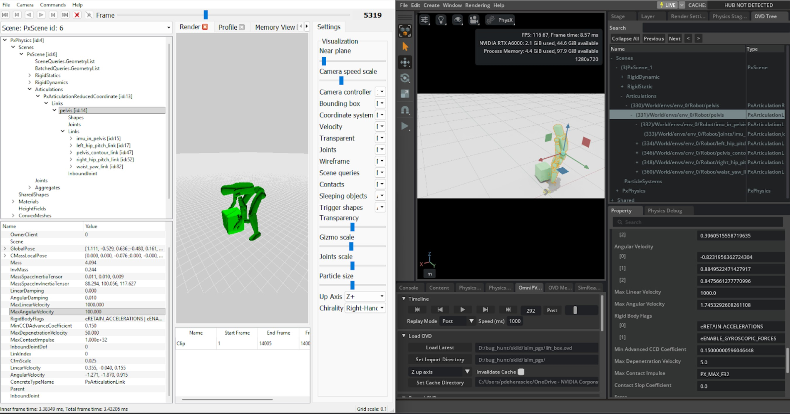

迁移到 3.0#
请按现有代码的来源选择迁移路径。Isaac Lab 2.x 路径按照大多数项目应采用的顺序组织：安装新版本、配置后端、更新任务 API，再迁移训练和可视化工作流。
选择起点：
从 Isaac Lab 2.x 迁移到 3.0 ：为现有 Isaac Lab 项目更新安装方式、API 和多后端架构。
从 Isaac Gym 和 IsaacGymEnvs 迁移 ：将 Isaac Gym 任务、仿真配置或训练工作流移植到 Isaac Lab。
可变形物体迁移 ：从旧软体 API 迁移到表面及体积可变形物体。
从 Isaac Lab 2.x 迁移到 3.0
Isaac Lab 3.0 将后端专用仿真代码与核心 API 分离，并为常见工作流提供统一命令。请按顺序完成以下各节；只有项目未使用某项功能时，才跳过对应章节。
参见
本页这一部分是 isaaclab-migrating-2x-to-3x 智能体技能（ skills/user/migrate-2x-to-3x/ ）的权威依据。修改时应同步更新技能，使智能体的指导保持一致。见 智能体技能 。
安装#
请使用全新的 Isaac Lab 3.0 仓库和 Python 3.12 环境，不要在现有 2.x 环境内升级软件包。现在推荐通过 uv 在命令运行时解析项目环境及可选集成。 isaaclab.sh 安装器仍可用于手动管理的环境，但已不再是默认方式。
创建并激活环境，安装所有扩展，再启动各学习库专用的脚本。
conda create -n env_isaaclab python=3.11
conda activate env_isaaclab
./isaaclab.sh --install rsl_rl
./isaaclab.sh -p scripts/reinforcement_learning/rsl_rl/train.py \
--task Isaac-Cartpole
安装一次 uv ； uv run 会创建或同步项目环境，再启动统一命令。在 isaaclab 之前使用 --extra 选择可选运行时。
curl -LsSf https://astral.sh/uv/install.sh | sh
uv run --extra isaacsim isaaclab train \
--rl_library rsl_rl --task Isaac-Cartpole \
physics=isaacsim_physx
仅使用 Newton 的工作流采用 uv run isaaclab ... ，OV PhysX 添加 --extra ovphysx ，完整 Isaac Sim 支持添加 --extra isaacsim 。平台专用配置、完整额外依赖列表及手动管理环境的选项，见 使用 uv 自动安装（推荐） 。
多后端架构与预设#
先了解新的包边界，再让环境配置支持选择后端。
物理专用配置及实现通过核心包提供，环境通常直接配置单个 PhysX 后端。
import isaaclab.sim as sim_utils
self.sim.physics = sim_utils.PhysxCfg(...)
核心资产分派到所选后端。显式导入后端专有配置，环境支持多个后端时采用预设。
from isaaclab.utils import configclass
from isaaclab_physx.physics import PhysxCfg
from isaaclab_tasks.utils import PresetCfg
@configclass
class PhysicsPresets(PresetCfg):
isaacsim_physx: PhysxCfg = PhysxCfg(...)
default: PhysxCfg = isaacsim_physx
self.sim.physics = PhysicsPresets()
多后端架构
Isaac Lab 3.0 引入 基于工厂的多后端架构 ，让资产类能够使用不同物理引擎，目前支持 PhysX 和 Newton 。
实例化 isaaclab 包中的资产类（如 Articulation 、 RigidObject ）时，工厂会自动确定并加载正确的后端实现：
from isaaclab.assets import Articulation, ArticulationCfg
# The factory pattern creates the appropriate backend implementation.
# No import changes are needed — the same isaaclab imports work regardless of backend.
robot = Articulation(cfg=ArticulationCfg(...))
工厂按约定工作：对于定义在 isaaclab.assets.articulation 中的类，会从当前后端包导入对应类。 isaaclab_physx 、 isaaclab_newton 和 isaaclab_ov 的模块结构与 isaaclab 对应。
具体默认值仍由任务决定，确保不指定覆盖设置时的启动行为可预测。任务可提供 physics=physx 、 physics=ovphysx 或 physics=newton_mjwarp 等选项，无需改变资产导入路径。
工厂模式与后端选择的完整介绍，见 后端架构 。添加新后端的方法，见 添加物理后端 。
新增 isaaclab_physx 和 isaaclab_newton 扩展
引入了两个新的后端扩展：
isaaclab_physx：资产及传感器类的 PhysX 专用实现。isaaclab_newton：受支持资产类的 Newton 专用实现，包括关节体、刚性物体和可变形物体。
以下类已移至 isaaclab_physx ：
Isaac Lab 2.x |
Isaac Lab 3.0 |
|---|---|
|
|
|
|
备注
可变形物体的公共 API 仍保留在后端中立的 isaaclab 包中。继续从 isaaclab.assets 导入 DeformableObject 、 DeformableObjectCfg 和 DeformableObjectData 。
备注
isaaclab_physx 扩展随 Isaac Lab 自动安装，无需额外步骤。
后端中立的导入方式
以下资产类仍在 isaaclab 包中，导入方式与之前相同：
这些类现在继承新的抽象基类，但仍完全向后兼容。
以下传感器类也保留在 isaaclab 包中，导入方式不变：
这些传感器类现在采用工厂模式，自动实例化相应后端实现（默认为 PhysX），仍完全向后兼容。
备注
Isaac Lab 3.0 的 Imu 传感器与 2.x 中的 不同 。旧 Imu （完整状态传感器）已改名为 Pva ；新的 Imu 是轻量级传感器，只提供角速度和线加速度。详见下文 IMU 传感器改名为 PVA，新增轻量级 IMU 。
如果需要直接导入 PhysX 传感器实现，例如用于类型提示或继承，可从 isaaclab_physx.sensors 导入：
# Direct PhysX implementation imports
from isaaclab_physx.sensors import ContactSensor, ContactSensorData
from isaaclab_physx.sensors import Imu, ImuData
from isaaclab_physx.sensors import Pva, PvaData
from isaaclab_physx.sensors import FrameTransformer, FrameTransformerData
from isaaclab_physx.sensors import JointWrenchSensor, JointWrenchSensorData
Newton 后端实现
新的 isaaclab_newton 扩展为以下类提供 Newton 物理后端实现：
这些类与对应的 PhysX 类实现相同的基类接口（ BaseArticulation 、 BaseRigidObject ），保证不同后端的 API 一致。它们采用相同的 Warp 数据约定：具有结构化类型的 wp.array ，以及 _index / _mask 写入方法。
备注
isaaclab_newton 扩展需要 newton 包及其依赖（ mujoco 、 mujoco-warp ），安装 isaaclab_newton 时会自动安装。
如果需要直接导入 Newton 实现，例如用于类型提示或继承：
from isaaclab_newton.assets import Articulation as NewtonArticulation
from isaaclab_newton.assets import RigidObject as NewtonRigidObject
模式配置类重构
Isaac Lab 3.0 将生成器的模式配置类拆分为求解器共用的 基类 （位于 isaaclab.sim.schemas ），以及位于 isaaclab_physx.sim.schemas 和 isaaclab_newton.sim.schemas 的 后端专用子类 。这样，同一资产配置可跨 PhysX 和 Newton 使用，也为后端专用的资产级参数预留位置，例如 MuJoCo 重力补偿。
完整设计见 模式配置类 。
类的迁移与重命名
重要
本节的 *BaseCfg / *PropertiesCfg 类本身现已弃用，改用模式片段，并将在 3.2 移除。请先通过本节了解 2.x 名称迁移到何处，再按 模式片段 迁移到片段。以下代码展示的是中间步骤，最终推荐采用片段 API。
以下 2.x 类名作为已弃用别名保留，转发到新位置，将在 3.2 移除。
Isaac Lab 2.x |
Isaac Lab 3.0 |
|---|---|
|
|
|
|
|
|
|
|
|
|
|
|
|
|
代码迁移
现有 2.x 代码仍可通过弃用别名运行，会产生 DeprecationWarning ；别名将在 3.2 移除：
# Isaac Lab 2.x
import isaaclab.sim as sim_utils
rigid_props = sim_utils.RigidBodyPropertiesCfg(disable_gravity=True, linear_damping=0.1)
面向 PhysX 的推荐 3.0 用法：
# Isaac Lab 3.0 — PhysX backend
from isaaclab_physx.sim.schemas import PhysxRigidBodyPropertiesCfg
rigid_props = PhysxRigidBodyPropertiesCfg(disable_gravity=True, linear_damping=0.1)
可跨后端使用的 3.0 用法，仅设置通用物理字段：
# Isaac Lab 3.0 — backend-portable
from isaaclab.sim.schemas import RigidBodyBaseCfg
rigid_props = RigidBodyBaseCfg(rigid_body_enabled=True, disable_gravity=True)
JointDriveBaseCfg 的 字段重命名
两个配置字段已重命名，使其 snake_case 名称与 USD 的 camelCase 属性名一一对应。旧名仍作为已弃用的 dataclass 字段保留在 JointDriveBaseCfg 上，因此 dataclasses.fields() 仍能看到它们； __post_init__ 会将值转发到新字段，并产生 DeprecationWarning 。同一实例中 同时 设置新旧字段不会报错，新字段优先；发出警告后旧字段值被丢弃。两个别名均计划在 4.0 移除。
Isaac Lab 2.x |
Isaac Lab 3.0 |
USD 属性（不变） |
|---|---|---|
|
||
|
Isaac Lab 2.x 用法仍有效，会产生 DeprecationWarning ，相关类将在 3.2 移除：
import isaaclab.sim as sim_utils
sim_utils.JointDrivePropertiesCfg(max_effort=80.0, max_velocity=5.0)
推荐的可跨后端 3.0 用法：
from isaaclab.sim.schemas import JointDriveBaseCfg
JointDriveBaseCfg(max_force=80.0, max_joint_velocity=5.0)
推荐的 PhysX 专用 3.0 用法：
from isaaclab_physx.sim.schemas import PhysxJointDrivePropertiesCfg
PhysxJointDrivePropertiesCfg(max_force=80.0, max_joint_velocity=5.0)
新增 Newton 和 MuJoCo 配置类
Newton 后端及其 MuJoCo 求解器的新配置类位于 isaaclab_newton.sim.schemas ：
类 |
用途 |
|---|---|
通过 |
|
通过 |
|
通过 |
|
通过 |
|
|
|
通过 |
MuJoCo 配置类继承对应的 Newton 类，因为 MuJoCo 是 Newton 的求解器选项之一。
模式片段取代整个配置层 （ *PropertiesCfg / *BaseCfg ）
上述拆分保留了 2.x 配置基于继承的形式：每个后端一个类，每个类携带多个 USD 命名空间的字段。Isaac Lab 现在以 模式片段 替代这一层：每个 USD 应用模式对应一个 @configclass ，只写入一个属性命名空间。生成器配置字段接受片段 列表，因此可以组合实际所需的命名空间，无需选择捆绑多个命名空间的类。
下表所有类均已弃用：实例化时会产生指出替代类的 DeprecationWarning ，并将在 3.2 移除。3.0 不移除任何类，两套 API 可同时使用。
替代列列出覆盖弃用类所有字段所需的 全部 片段，包括从旧基类继承的字段。旧类通常捆绑多个 USD 命名空间，因此只替换为后端专用片段，会悄然丢失继承的属性。
已弃用的类 |
替代片段（完整集合） |
|---|---|
|
|
|
|
|
|
|
|
|
|
|
|
|
|
|
|
|
|
|
|
|
|
|
|
|
|
备注
Newton 行中包含 PhysX 片段，是因为一些通用属性目前只存在于 PhysX 的 USD 命名空间： disable_gravity 只对应 physxRigidBody:disableGravity ， max_joint_velocity 只对应 physxJoint:maxJointVelocity ， contact_offset / rest_offset 只对应 physxCollision:* ， articulation_enabled 只对应 physxArticulation:articulationEnabled 。Newton 的 USD 导入器会读取这些属性，因此无论使用哪个后端，写入它们的仍是 PhysX 片段。
备注
可变形物体配置类（ DeformableBodyPropertiesBaseCfg 及其后端子类） 未被 弃用，因为尚无对应的片段类族。
代码迁移
# Deprecated: one class bundling the physics:* and physxRigidBody:* namespaces
import isaaclab.sim as sim_utils
rigid_props = sim_utils.RigidBodyPropertiesCfg(kinematic_enabled=False, linear_damping=0.1)
# Recommended: one fragment per USD namespace, composed in the spawner slot
from isaaclab.sim.schemas import UsdPhysicsRigidBodyCfg
from isaaclab_physx.sim.schemas import PhysxRigidBodyCfg
rigid_props = [
UsdPhysicsRigidBodyCfg(kinematic_enabled=False),
PhysxRigidBodyCfg(linear_damping=0.1),
]
配置字段也可接受从 prim 路径模式到片段列表的映射，让同一个生成器配置针对不同 prim 设置不同属性：
rigid_props = {"/.*": [UsdPhysicsRigidBodyCfg(kinematic_enabled=False)]}
三个旧字段不是 USD 属性，因此没有对应片段，而是移至生成器配置。如果迁移时仅替换配置类，会丢失这些字段：
已弃用的配置字段 |
片段 API 中的替代方式 |
|---|---|
|
生成器配置中的 |
|
生成器配置中的 |
|
生成器的 |
重命名的关节驱动字段在片段中也仍有效： max_effort 是 max_force 的弃用别名， max_velocity 是 max_joint_velocity 的弃用别名。
模式写入函数
define_* 和 modify_* 写入函数与配置类一同弃用，将在 3.2 移除。每个函数都有对应的 apply_* 替代函数，接受 prim 路径 表达式 （匹配完整 prim 路径的正则表达式）及片段列表，因此一次调用即可写入整个子树：
已弃用的写入函数 |
替代函数 |
|---|---|
|
|
|
|
|
|
|
|
|
|
|
|
|
|
# Deprecated: authors one prim, takes a single bundled cfg
sim_utils.modify_rigid_body_properties("/World/Robot/base", RigidBodyPropertiesCfg(linear_damping=0.1))
# Recommended: authors every matching prim, takes a fragment list
sim_utils.apply_rigid_body_properties("/World/Robot/.*", [PhysxRigidBodyCfg(linear_damping=0.1)])
可变形物体写入函数（ define_deformable_body_properties 、 modify_deformable_body_properties 、 define_deformable_curve_properties ）未被弃用。
迁移期间关闭警告
这些警告是标准 DeprecationWarning 。迁移期间可按 消息内容 过滤：
import warnings
# Silence one legacy symbol.
warnings.filterwarnings("ignore", category=DeprecationWarning, message=r"RigidBodyPropertiesCfg is deprecated")
# Silence every legacy schema cfg and writer at once.
warnings.filterwarnings("ignore", category=DeprecationWarning, message=r"\w+ is deprecated\. Use ")
# Silence the renamed joint-drive field aliases (``max_effort``, ``max_velocity``).
warnings.filterwarnings("ignore", category=DeprecationWarning, message=r"'\w+' is deprecated; use ")
警告
不要用 module="isaaclab.sim.schemas.*" 过滤这些警告。 module 匹配警告的 stacklevel 所选栈帧的 __name__ ；这些警告有意指向 您的 调用位置，因此归属于构造配置或调用写入函数的模块，而非 isaaclab.sim.schemas 。这里用 module= 过滤不会关闭任何警告。
备注
请求关节级 actuatorgravcomp=True 、但未提供 MuJoCo 刚体配置时，生成器会自动启用刚体级重力补偿。没有刚体 gravcomp 时， actuatorgravcomp 不起作用，因为没有可分配的力。若需覆盖，请在 rigid_props 中显式传入 MujocoRigidBodyPropertiesCfg 。详见 重力补偿（MuJoCo 求解器） 。
各字段所属的类及对应 USD 属性的完整表格，见 模式配置类 。
多后端支持：PresetCfg 模式
Isaac Lab 3.0 引入 PresetCfg 模式 ，用于编写同时兼容 PhysX 和 Newton 的环境配置。环境声明具名配置变体，而非写死单一物理配置，启动时通过 Hydra 命令行覆盖选择当前变体。
什么是 PresetCfg？
PresetCfg 是基础 @configclass ，其带类型字段代表某一配置部分的具名变体。没有命令行覆盖时，使用 default 字段。其他字段为命名预设，可通过命令行 presets=<name> 选择：
from isaaclab.physics import PhysxAutoCfg
from isaaclab.utils import configclass
from isaaclab_ov.physics import OvPhysxCfg
from isaaclab_tasks.utils import PresetCfg
@configclass
class MyPhysicsCfg(PresetCfg):
isaacsim_physx: PhysxCfg = PhysxCfg(...)
ovphysx: OvPhysxCfg = OvPhysxCfg()
physx: PhysxAutoCfg = PhysxAutoCfg(isaacsim_physx=isaacsim_physx, ovphysx=ovphysx)
default: PhysxCfg = isaacsim_physx # used when no override is given
newton_mjwarp: NewtonCfg = NewtonCfg(...) # selected by physics=newton_mjwarp
启动时选择预设
在命令行传入 physics=newton_mjwarp ，替换整个配置部分。使用 physics=physx 可启用 PhysX 类后端的自动选择。原有的 presets=NAME 形式仍支持相同取值。
# Run with Newton backend
uv run --extra isaacsim isaaclab train --rl_library rsl_rl \
--task Isaac-Open-Drawer-Franka-Direct physics=newton_mjwarp
# Run with default (concrete Isaac Sim PhysX) backend
uv run --extra isaacsim isaaclab train --rl_library rsl_rl \
--task Isaac-Open-Drawer-Franka-Direct
为环境添加多后端支持
步骤 1：物理配置
将 __post_init__ 中直接赋值的 PhysxCfg(...) 替换为 PresetCfg 子类，包含 PhysX 和 Newton 两个变体。
修改前：
def __post_init__(self):
self.sim.dt = 1 / 60
self.sim.physics = PhysxCfg(bounce_threshold_velocity=0.2)
重要
下面的修改后示例对应当前 Reach 任务，它有意将 Newton/MJWarp 作为默认后端。修改前的片段仅展示旧单后端形式，因此两个片段的默认值不同。如果迁移的任务应继续默认使用 PhysX，请改为 default: PhysxCfg = isaacsim_physx 。添加后端变体不应悄然改变任务原有默认值。
修改后：
from isaaclab.physics import PhysxAutoCfg
from isaaclab_newton.physics import MJWarpSolverCfg, NewtonCfg
from isaaclab_ov.physics import OvPhysxCfg
from isaaclab_physx.physics import PhysxCfg
from isaaclab_tasks.utils import PresetCfg
@configclass
class ReachPhysicsCfg(PresetCfg):
isaacsim_physx: PhysxCfg = PhysxCfg(bounce_threshold_velocity=0.2)
ovphysx: OvPhysxCfg = OvPhysxCfg()
physx: PhysxAutoCfg = PhysxAutoCfg(isaacsim_physx=isaacsim_physx, ovphysx=ovphysx)
newton_mjwarp: NewtonCfg = NewtonCfg(
solver_cfg=MJWarpSolverCfg(
njmax=20, nconmax=20, ls_iterations=20,
cone="pyramidal", integrator="implicitfast",
impratio=1,
),
num_substeps=1,
debug_mode=False,
)
default: NewtonCfg = newton_mjwarp
# In the env cfg __post_init__:
def __post_init__(self):
self.sim.dt = 1 / 60
self.sim.physics = ReachPhysicsCfg()
Newton 求解器主要参数：
参数 |
作用 |
|---|---|
|
最大约束行数，设为不小于每个环境的预计接触数。 |
|
每个环境的最大接触数。 |
|
迭代线搜索次数上限，收敛时提前停止。应与外层求解器迭代次数一同调整，兼顾耗时和收敛。 |
|
|
|
|
|
阻抗比，大于 1 可改善软接触稳定性。 |
|
每个环境步的物理子步数。 |
步骤 2：区分 Newton 和 PhysX 配置
Newton 与 PhysX 仿真的配置不一定完全相同。可以提供 Newton 专用配置，例如：
@configclass
class EventCfg:
"""Full event config (PhysX-compatible)."""
robot_physics_material = EventTerm(
func=mdp.randomize_rigid_body_material,
mode="startup",
params={...},
)
reset_all = EventTerm(func=mdp.reset_scene_to_default, mode="reset")
reset_robot_joints = EventTerm(
func=mdp.reset_joints_by_offset, mode="reset", params={...}
)
@configclass
class _EnvNewtonEventCfg:
"""Newton-compatible events."""
reset_all = EventTerm(func=mdp.reset_scene_to_default, mode="reset")
reset_robot_joints = EventTerm(
func=mdp.reset_joints_by_offset, mode="reset", params={...}
)
@configclass
class EnvEventCfg(PresetCfg):
default: EventCfg = EventCfg()
physx: EventCfg = EventCfg()
newton_mjwarp: _EnvNewtonEventCfg = _EnvNewtonEventCfg()
然后将环境配置中的 events 字段从 EventCfg 改为 EnvEventCfg ：
@configclass
class MyEnvCfg(ManagerBasedRLEnvCfg):
events: EnvEventCfg = EnvEventCfg() # was: EventCfg = EventCfg()
Isaac Sim API 兼容性
Isaac Sim 6.0 已 弃用 原有的 isaacsim.core.* 、 isaacsim.sensors.* 和 isaacsim.robot.wheeled_robots Python 模块路径，改用对应的 isaacsim.core.experimental.* 及 *.experimental.* 路径。Isaac Lab 3.0 已完成迁移，确保未来 Isaac Sim 移除旧模块后，Isaac Lab 仍能加载和运行。
对大多数用户而言，这一变化无需额外处理；Isaac Lab 自身的公共 Python API（ isaaclab 、 isaaclab_physx 、 isaaclab_tasks 、 isaaclab_teleop 、 isaaclab_mimic ）不变。只有以下情况需要关注：
项目中 直接 导入 Isaac Sim 符号；或
维护列有 Isaac Sim 扩展依赖的自定义 Kit experience（
.kit文件）；或在自己使用 PhysX 的代码中，从
isaacsim.core.simulation_manager导入过SimulationManager。
Python 模块重命名
请按下表更新代码中的直接导入。 Isaac Lab 仓库内提供替代项时，应优先使用 Isaac Lab API ，再考虑 isaacsim.core.experimental.* ：
已弃用的 Isaac Sim 路径 |
推荐替代项 |
|---|---|
|
|
|
|
|
|
|
|
|
|
|
|
|
|
|
|
|
|
|
|
|
|
|
|
|
|
从 isaacsim.core.simulation_manager.SimulationManager 迁移时，可使用局部别名，让不同后端的调用代码保持一致：
from isaaclab_physx.physics import PhysxManager as SimulationManager
# or, for the Newton backend
from isaaclab_newton.physics import NewtonManager as SimulationManager
直接导入前必须显式启用 Isaac Sim 扩展
Isaac Lab 3.0 不再仅为了让 Python 模块可导入而自动初始化 Isaac Sim 扩展。默认 Kit experience 现在加载更少的扩展，避免未使用的 Isaac Sim 包引入不必要的依赖或弃用别名。
如果项目直接导入 Isaac Sim 扩展模块，请在 Kit 应用启动后、导入该模块之前启用扩展：
from isaaclab.sim.utils import enable_extension
enable_extension("isaacsim.core.experimental.prims")
from isaacsim.core.experimental.prims import XformPrim
对于 isaacsim.core.experimental.* 和 isaacsim.sensors.experimental.* 等迁移替代模块，这一点尤其重要。除非对应扩展已经启用，否则不要从 isaacsim.core.experimental.utils.app 导入 enable_extension ，应使用 Isaac Lab 的 isaaclab.sim.utils.enable_extension() 。该辅助函数要求 Kit 应用已运行；在普通 Python 中、Kit 启动前调用会抛出 RuntimeError 。
更新 Kit experience 文件 （ .kit ）
如果维护的是基于 apps/ 下 Isaac Lab 应用的自定义 Kit experience：
停止注册已弃用扩展的搜索路径。 所有默认 Isaac Lab Kit experience，包括无界面、渲染和 XR 变体，都已移除
extsDeprecated搜索路径。请在自定义文件中同步修改。将显式 Isaac Sim 扩展依赖改为未弃用的对应项 ，即上表的
isaacsim.core.experimental.*、isaacsim.sensors.experimental.*及isaacsim.robot.experimental.wheeled_robots。不要依赖默认 Isaac Lab 应用预加载项目直接导入的 Isaac Sim 扩展。 请将扩展加入自定义
.kit文件，或在导入其 Python 模块之前，通过isaaclab.sim.utils.enable_extension()启用。移除会引入
isaacsim.core.api的未使用扩展 。Isaac Lab 已不再依赖它们，保留它们会重新引入已弃用的组件。
不再重新导出 SimulationManager
本次迁移的早期内部预览曾短暂提供 isaaclab_physx.physics.SimulationManager ，作为 PhysxManager 的公共别名。 该别名已移除 。请直接使用 PhysxManager ；如果希望调用代码与后端无关，可如上所示在导入处使用 as SimulationManager 。
已移除的独立复现脚本
source/isaaclab/test/deps/isaacsim 下少量依赖已弃用 Isaac Sim 核心扩展的旧复现脚本已移除，包括 check_camera.py 、 check_floating_base_made_fixed.py 、 check_legged_robot_clone.py 、 check_rep_texture_randomizer.py 和 check_ref_count.py 。同类调试工作流请使用 isaaclab.sim ，搭配新的 isaacsim.core.experimental.* API。
PhysX Tensors API 模块路径
近期 Isaac Sim 版本移除了 omni.physics.tensors 的内部 impl 子模块，现在直接在 omni.physics.tensors.api 下提供 PhysX Tensor API 类型，如 ArticulationView 、 RigidBodyView 、 SimulationView 等。从旧路径导入会报 ModuleNotFoundError: No module named 'omni.physics.tensors.impl' 。
Isaac Lab 已改用新路径。下游代码，包括自定义资产、传感器或脚本，如果使用旧路径，也必须更新：
# Before (Isaac Lab 2.x / older Isaac Sim)
import omni.physics.tensors.impl.api as physx
# After (Isaac Lab 3.x / current Isaac Sim)
import omni.physics.tensors.api as physx
类本身不变，仅模块路径迁移。类型提示中的旧路径 omni.physics.tensors.impl.api.ArticulationView 也应改为 omni.physics.tensors.api.ArticulationView 。
资产、执行器与传感器#
配置好后端后，再更新面向资产的 API，包括视图重命名、执行器归属及传感器替代。
from isaaclab.sim.views import XformPrimView
from isaaclab.sensors import ImuCfg
view = XformPrimView(...)
wrench = robot.data.body_incoming_joint_wrench_b
from isaaclab.sim.views import FrameView
from isaaclab.sensors import JointWrenchSensorCfg, PvaCfg
view = FrameView(...)
wrench = env.scene.sensors["joint_wrench"].data.force.torch
XformPrimView 重命名为 FrameView
Isaac Lab 的 XformPrimView 及相关类已改名为 FrameView ，更准确地表达用途，也避免与 Isaac Sim 的 XFormPrim 类层次混淆。旧名 XformPrimView 作为弃用别名保留。
该重命名适用于所有后端：
Isaac Lab 2.x |
Isaac Lab 3.0 |
|---|---|
|
|
|
|
|
|
|
|
|
大多数用户只需更新导入：
# Before
from isaaclab.sim.views import XformPrimView
# After
from isaaclab.sim.views import FrameView
FrameView 工厂根据当前物理后端自动分派：PhysX 使用 FabricFrameView ，Newton 使用 NewtonSiteFrameView 。弃用别名 XformPrimView 仍有效，但将在未来版本移除。
执行器驱动力与关节限值名称
执行器配置现采用带有 joint 前缀的名称来表示求解器限值。请将现用配置迁移到下表列出的规范字段。旧名称在 3.0 系列中仍可使用，但会触发 DeprecationWarning ，并将在 3.1 中移除。
已弃用的配置字段 |
规范配置字段 |
运行时归属 |
|---|---|---|
|
|
执行器模型（额定限值） |
|
|
|
|
|
|
actuator_effort_limit 裁剪显式执行器模型输出。 joint_effort_limit 和 joint_velocity_limit 是构造时的关节属性覆盖，通过执行器组的关节表达式选择作用对象。弃用别名 effort_limit 、 velocity_limit 、 effort_limit_sim 和 velocity_limit_sim 在 3.0 中仍被接受。所有执行器类型的 effort_limit 都解析为额定 actuator_effort_limit 。对于未单独配置求解器限幅的隐式组，为保持向后兼容，额定值也会填入 joint_effort_limit ；需要不同的额定和求解器限值时，请同时设置两者。运行时组属性 effort_limit 和 velocity_limit 采用相同映射，也已弃用。 actuator_velocity_limit 描述额定速度或隐式软限值快照。 joint_velocity_limit 仅请求求解器施加限制，是否支持取决于后端。完整归属模型见 关节和执行器属性的归属 。
行为变化：显式组保留求解器驱动力限值。 以前，Isaac Lab 将显式执行器驱动关节的求解器驱动力限值提高到 1.0e9 ，只由模型裁剪驱动力。现在求解器保留资产中写入或配置的 joint_effort_limit ，因此显式模型提交的驱动力会被求解器再次裁剪。如果资产设置了较小关节驱动力限值，而策略原本只依赖模型限值，请在执行器配置中将 joint_effort_limit 设为不小于 actuator_effort_limit 。
以下运行时组属性已移除。请从关节体数据读取实时值，并使用对应的索引式关节体写入方法：
已移除的运行时组属性 |
读取 |
写入 |
|---|---|---|
|
|
|
|
|
|
|
|
|
|
|
|
|
|
|
|
|
|
动摩擦视图及写入方法为后端专用，Newton 没有对应关节属性。
自定义执行器模型。 受保护的辅助方法 ActuatorBase._parse_joint_parameter 已随构造函数重构移除。此前用它解析配置字段的自定义执行器子类，应调用独立函数 resolve_joint_parameter() ，它采用相同的解析语义：
from isaaclab.actuators import ActuatorBase, resolve_joint_parameter
class MyActuator(ActuatorBase):
def __init__(self, cfg, joint_names, joint_ids, num_envs, device, **kwargs):
super().__init__(cfg, joint_names, joint_ids, num_envs, device, **kwargs)
# before: self.my_gain = self._parse_joint_parameter(cfg.my_gain, 0.0)
self.my_gain = resolve_joint_parameter(cfg.my_gain, 0.0, joint_names, num_envs, device)
后端关节体方法 write_actuator_stiffness_to_sim 和 write_actuator_damping_to_sim 已弃用。受管理的增益随机化请使用 randomize_actuator_gains() ，它会按需更新执行器自身增益、隐式求解器驱动或原生控制器参数。要直接写入 Newton 执行组的控制器，使用 write_group_parameter() 。
具名正则表达式组保留原有配置行为。同一组同时存在旧名及规范替代名时，应只使用规范名。值相同时会警告并选择规范值，值冲突时抛出 ValueError 。
执行器 API 移至 ActuatorCollection
Isaac Lab 3.x 将执行器的管理权从 Articulation 移至后端中立的 ActuatorCollection ，通过 actuators 访问。执行器命令设置方法及逐关节执行器遥测数据现在位于集合中，让相同代码能够驱动所有物理后端。集合的设置方法仅接受关键字参数。
方法迁移
Articulation 的以下方法移至执行器集合。旧方法已弃用，将在未来版本移除：
已弃用 |
新 API |
|---|---|
|
|
|
|
|
|
|
|
属性迁移（数据类）
ArticulationData 的以下属性移至执行器集合的命令视图中。旧属性已弃用，将在未来版本移除：
已弃用 |
新 API |
|---|---|
|
|
|
|
|
|
|
|
|
|
备注
所有弃用方法和属性都会转发到新 API，并在使用时产生 DeprecationWarning 。现有代码仍能运行，但应迁移到新 API，避免未来版本出现问题。
soft_joint_vel_limits 仍保留在 ArticulationData 上，不要迁移到执行器集合。 ArticulationData.gear_ratio 已移除：它是旧的 DCMotor 遥测数据，已不再更新，读取结果始终为 1。传动比是执行器配置输入，而非仿真输出，应从执行器配置读取。
重要
LEAPP 导出的动作项暂时例外。集合命令设置方法尚无 LEAPP 输出标注，因此可导出的动作项必须继续调用已弃用但带标注的 Articulation.set_joint_*_target_index 或 *_mask 方法，直到导出器支持集合设置方法。不参与导出的运行时代码应使用集合 API。
执行器组拓扑在配置阶段确定。请在创建关节体之前，通过 actuators 添加或移除组：
robot_cfg.actuators["gripper"] = ImplicitActuatorCfg(...)
robot = Articulation(robot_cfg)
运行时对 robot.actuators 赋值或删除条目会抛出 TypeError 。组成员、关节覆盖范围、原生绑定、执行切片及缓存启动均在构造时固定。请继续使用公共具名组及集合视图；内部执行细节和兼容性投影不是需要迁移的公共接口。
迁移示例
以下完整示例展示如何更新代码：
修改前（Isaac Lab 2.x）：
# Setting joint targets on the articulation (deprecated)
robot = scene["robot"]
robot.set_joint_effort_target(efforts, joint_ids=joint_ids)
# Reading actuator telemetry from the data class (deprecated)
applied = robot.data.applied_torque
pos_target = robot.data.joint_pos_target
修改后（Isaac Lab 3.0）：
# Sending actuator commands expressed in joint-side coordinates (keyword-only)
robot = scene["robot"]
robot.actuators.target_command.set_effort_index(value=efforts, joint_ids=joint_ids)
# Reading actuator telemetry from the collection
applied = robot.actuators.applied_effort.torch
position_command = robot.actuators.target_command.position.torch
执行器集合的完整运行时 API，包括命令设置方法及遥测缓冲区，见 运行时 API： articulation.actuators 。
RigidObjectCollection API 重命名
RigidObjectCollection 和 RigidObjectCollectionData 的 API 已重命名，与其他资产类保持一致。 object_* 命名已弃用，改为 body_* 。
方法重命名
以下方法已重命名，旧方法弃用并将在未来版本移除：
已弃用（2.x） |
新 API（3.0） |
|---|---|
|
|
|
|
|
|
|
|
|
|
|
|
|
|
|
|
|
|
属性重命名（数据类）
RigidObjectCollectionData 的以下属性已重命名，旧属性弃用并将在未来版本移除：
已弃用（2.x） |
新 API（3.0） |
|---|---|
|
|
|
|
|
|
|
|
|
|
|
|
|
|
|
|
|
|
|
|
|
|
|
|
|
|
|
|
|
|
|
|
|
|
|
|
|
|
|
|
|
|
|
|
|
|
|
|
|
|
|
|
|
|
|
|
|
|
|
|
|
|
|
|
|
|
|
|
|
|
|
|
|
|
|
|
备注
所有弃用方法和属性在使用时都会发出弃用警告。现有代码仍可运行，但应迁移到新 API，避免未来版本出现问题。
迁移示例
以下完整示例展示如何更新代码：
修改前（Isaac Lab 2.x）：
from isaaclab.assets import DeformableObject, DeformableObjectCfg
from isaaclab.assets import SurfaceGripper, SurfaceGripperCfg
from isaaclab.assets import RigidObjectCollection
# Using deprecated root_physx_view
robot = scene["robot"]
material_properties = robot.root_physx_view.get_material_properties()
# Using deprecated object_* API
collection = scene["object_collection"]
poses = collection.data.object_pose_w
collection.write_object_state_to_sim(state, env_ids=env_ids, object_ids=object_ids)
修改后（Isaac Lab 3.0）：
from isaaclab.assets import DeformableObject, DeformableObjectCfg
from isaaclab_physx.assets import SurfaceGripper, SurfaceGripperCfg
from isaaclab.assets import RigidObjectCollection # unchanged
# Using the new backend-specific root_view property (PhysX shown)
robot = scene["robot"]
material_properties = robot.root_view.get_material_properties()
# Using new body_* API
collection = scene["object_collection"]
poses = collection.data.body_pose_w
collection.write_body_state_to_sim(state, env_ids=env_ids, body_ids=object_ids)
root_view 的具体类型取决于后端。上面的 get_material_properties() 通过 PhysX Tensor API 读取各刚性形状的静摩擦、动摩擦和恢复系数；Newton 选择及 OvPhysX 绑定使用不同访问方法。在跨后端代码中使用 root_view 前，请参阅 访问原生物理 API 。
可变形物体 API 变化
可变形体 API 已按后端拆分，并采用新的 Omni Physics 体积与表面可变形模型。见 可变形物体迁移 。
IMU 传感器改名为 PVA，新增轻量级 IMU
旧 Imu 传感器已改名为 PVA （Pose Velocity Acceleration，位姿、速度、加速度），因为它提供完整位姿、速度和加速度数据，远超真实惯性测量单元的测量范围。新增的轻量级 IMU 仅提供真实 IMU 测量的两种物理量：角速度（陀螺仪）及线加速度（加速度计）。
此前使用旧 Imu 时，需要决定改用哪种传感器：
配置及数据访问示例，见 位姿、速度与加速度（PVA）传感器 。
导入变化：
# Before (Isaac Lab 2.x) — the old IMU provided full state
from isaaclab.sensors import Imu, ImuCfg, ImuData
# After (Isaac Lab 3.x) — use PVA for the same full-state sensor
from isaaclab.sensors import Pva, PvaCfg, PvaData
# Or use the new lightweight IMU for angular velocity + linear acceleration only
from isaaclab.sensors import Imu, ImuCfg, ImuData
配置变化：
两个传感器都已移除 gravity_bias 配置参数：
PVA 报告原始运动学加速度，不包含重力贡献，因为加速度由速度的有限差分得到，不额外叠加重力项。
IMU 的加速度计读数始终计入重力，符合真实加速度计的行为。重力向量自动从仿真获取。
# Before (Isaac Lab 2.x)
imu_cfg = ImuCfg(
prim_path="{ENV_REGEX_NS}/Robot/base",
gravity_bias=(0.0, 0.0, 9.81), # had to be configured manually
)
# After (Isaac Lab 3.x) — PVA (no gravity in acceleration)
pva_cfg = PvaCfg(prim_path="{ENV_REGEX_NS}/Robot/base")
# After (Isaac Lab 3.x) — IMU (gravity always included automatically)
imu_cfg = ImuCfg(prim_path="{ENV_REGEX_NS}/Robot/base")
观测函数变化：
# Before (Isaac Lab 2.x)
from isaaclab.envs.mdp import imu_orientation, imu_projected_gravity
# After (Isaac Lab 3.x)
from isaaclab.envs.mdp import pva_orientation, pva_projected_gravity
数据属性变化：
新的 ImuData 仅提供 ang_vel_b 和 lin_acc_b 。如果使用了 pos_w 、 quat_w 、 lin_vel_b 、 ang_acc_b 或 projected_gravity_b 等其他属性，请改用提供全部这些数据的 PvaData 。
传感器位姿属性弃用
ContactSensorData 的 pose_w 、 pos_w 和 quat_w 属性已弃用，将在未来版本移除。
需要跟踪世界坐标系中的传感器位姿时，请改用 FrameTransformer 等专用传感器。
修改前（已弃用）：
# Using pose properties directly on sensor data
sensor_pos = contact_sensor.data.pos_w
sensor_quat = contact_sensor.data.quat_w
修改后（推荐）：
# Use FrameTransformer to track sensor pose
frame_transformer = FrameTransformer(FrameTransformerCfg(
prim_path="{ENV_REGEX_NS}/Robot/base",
target_frames=[
FrameTransformerCfg.FrameCfg(prim_path="{ENV_REGEX_NS}/Robot/sensor_link"),
],
))
sensor_pos = frame_transformer.data.target_pos_w
sensor_quat = frame_transformer.data.target_quat_w
接触力属性名
接触传感器的力属性现在明确区分汇总量与按对象筛选后的法向力、摩擦力。 net_forces_w 为总接触力（法向力 + 摩擦力），Newton 直接报告该量；PhysX 和 OVPhysX 无法计算总力，因此返回对应法向力量并警告。 friction_forces_w 为汇总摩擦力，Newton 通过 net_friction_forces_w 报告；PhysX 和 OVPhysX 仅提供按对象筛选的摩擦力，因此返回 friction_force_matrix_w 并警告。
属性 |
含义 |
PhysX / OVPhysX |
Newton |
|---|---|---|---|
|
总接触力 |
返回 |
总力（ |
|
总接触力历史 |
返回 |
总力历史 |
|
按对象筛选的总力矩阵 |
返回 |
按对象筛选的总力矩阵 |
|
按对象筛选的总力历史 |
返回 |
按对象筛选的总力矩阵历史 |
|
汇总摩擦力 |
返回 |
汇总摩擦力（ |
需要区分法向力和摩擦力时，应优先使用明确的名称 net_normal_forces_w 、 net_friction_forces_w 、 normal_force_matrix_w 、 friction_force_matrix_w 及其 *_history 变体。Newton 还提供 net_friction_forces_w_history 和 friction_force_matrix_w_history 。PhysX 无法报告未经筛选的汇总摩擦力，访问 net_friction_forces_w 或 net_friction_forces_w_history 会抛出 NotImplementedError ；请改用按对象筛选的摩擦力矩阵。
关节体关节力旋量数据移至 JointWrenchSensor
ArticulationData.body_incoming_joint_wrench_b 属性已移除。Isaac Lab 3.0 通过 JointWrenchSensor 提供连入关节的反作用力旋量。该传感器有 PhysX 和 Newton 后端实现，分别返回力 [N] 和力矩 [N·m] 缓冲区。数据以子体侧的连入关节坐标系表达，力矩参考点为子体侧关节锚点。
配置及数据访问示例见 关节力旋量传感器 。
修改前（Isaac Lab 2.x）：
wrench_b = robot.data.body_incoming_joint_wrench_b.torch[:, body_ids]
修改后（Isaac Lab 3.x）：
import torch
from isaaclab.scene import InteractiveSceneCfg
from isaaclab.sensors import JointWrenchSensorCfg
from isaaclab.utils import replace
class MySceneCfg(InteractiveSceneCfg):
robot = replace(ROBOT_CFG, prim_path="{ENV_REGEX_NS}/Robot")
joint_wrench = JointWrenchSensorCfg(prim_path="{ENV_REGEX_NS}/Robot")
sensor = env.scene.sensors["joint_wrench"]
data = sensor.data
wrench_j = torch.cat(
(
data.force.torch[:, body_ids],
data.torque.torch[:, body_ids],
),
dim=-1,
)
使用 body_names 或 find_bodies() ，将传感器条目映射到关节体刚体名称。PhysX 为每个连杆报告一个条目，包括根连杆；Newton 报告可测量的连入关节所对应的子刚体。
对于基于管理器的环境，应将原先使用关节体数据属性的观测改为依赖关节力旋量传感器：
import isaaclab.envs.mdp as mdp
from isaaclab.managers import SceneEntityCfg
from isaaclab.managers import ObservationTermCfg as ObsTerm
from isaaclab.scene import InteractiveSceneCfg
from isaaclab.sensors import JointWrenchSensorCfg
from isaaclab.utils import replace
class MySceneCfg(InteractiveSceneCfg):
robot = replace(ROBOT_CFG, prim_path="{ENV_REGEX_NS}/Robot")
joint_wrench = JointWrenchSensorCfg(prim_path="{ENV_REGEX_NS}/Robot")
feet_body_forces = ObsTerm(
func=mdp.body_incoming_wrench,
params={
"sensor_cfg": SceneEntityCfg(
"joint_wrench",
body_names=["left_foot", "right_foot"],
)
},
)
射线投射器 Warp 后端
RayCaster 、 RayCasterCamera 、 MultiMeshRayCaster 和 MultiMeshRayCasterCamera 已从基于 PyTorch/USD 的后端迁移到原生 Warp 核函数流水线。它消除了逐步张量分配及 Torch 到 Warp 转换，提升性能，但也带来一些不兼容变化。
RayCasterData 返回类型
pos_w 、 quat_w 和 ray_hits_w 现在返回 ProxyArray ，而非 torch.Tensor 。这与前文介绍的通用 ProxyArray 后端迁移采用相同方式。
# Before (Isaac Lab 2.x)
ray_hits = ray_caster.data.ray_hits_w # torch.Tensor
sensor_pos = ray_caster.data.pos_w # torch.Tensor
# After (Isaac Lab 3.x)
ray_hits = ray_caster.data.ray_hits_w # ProxyArray
sensor_pos = ray_caster.data.pos_w # ProxyArray
# To use with torch operations, access .torch
ray_hits_torch = ray_caster.data.ray_hits_w.torch
sensor_pos_torch = ray_caster.data.pos_w.torch
射线对齐配置
RayCasterCfg 的布尔参数 attach_yaw_only 已弃用，改用新的 ray_alignment ，接受以下三个字符串之一：
旧 API（2.x） |
新 API（3.0） |
行为 |
|---|---|---|
|
|
射线跟随传感器的完整朝向。 |
|
|
射线只跟随传感器朝向的偏航分量。 |
（无此选项） |
|
射线始终在世界坐标系中投射，不应用旋转。 |
# Before (Isaac Lab 2.x)
cfg = RayCasterCfg(attach_yaw_only=True, ...)
# After (Isaac Lab 3.x)
cfg = RayCasterCfg(ray_alignment="yaw", ...)
射线投射核函数签名变化
Warp 核函数 raycast_dynamic_meshes_kernel() 现在要求第一个参数为 env_mask 。它是控制更新哪些环境的 wp.array(dtype=wp.bool) 。公共 Python 包装函数 raycast_dynamic_meshes() 已更新，会自动注入全 True 掩码，因此使用包装函数的代码不受影响。
如果直接调用核函数，请更新启动调用：
import warp as wp
# Before (Isaac Lab 2.x)
wp.launch(
raycast_dynamic_meshes_kernel,
dim=(num_meshes, num_envs, num_rays),
inputs=[ray_starts, ray_directions, mesh_ids, ...],
)
# After (Isaac Lab 3.x) -- env_mask is now the first input
env_mask = wp.ones(num_envs, dtype=wp.bool, device=device)
wp.launch(
raycast_dynamic_meshes_kernel,
dim=(num_meshes, num_envs, num_rays),
inputs=[env_mask, ray_starts, ray_directions, mesh_ids, ...],
)
RayCaster.meshes 缓存键
类变量 meshes 在所有 RayCaster 实例之间缓存 Warp 网格，现在以 (prim_path, device) 元组为键，而非只有 prim_path 。这避免在一个设备（如 CPU）上构建的网格被另一个设备（如 CUDA）上的传感器复用；此前，这会在没有统一内存的系统上导致非法内存访问。
直接读写该缓存的代码，必须同时更新类型标注和键：
# Before (Isaac Lab 2.x)
meshes: ClassVar[dict[str, wp.Mesh]] = {}
wp_mesh = RayCaster.meshes[prim_path]
# After (Isaac Lab 3.x)
meshes: ClassVar[dict[tuple[str, str], wp.Mesh]] = {}
wp_mesh = RayCaster.meshes[(prim_path, device)]
数据访问与数学运算#
验证任务行为前，先迁移张量访问、索引写入、缓冲区和四元数约定。
数据属性表现为 Torch 张量，四元数采用 WXYZ 顺序，同一个写入方法同时接受索引和掩码。
identity = (1.0, 0.0, 0.0, 0.0)
root_pos = robot.data.root_pos_w
robot.write_root_pose_to_sim(pose, env_ids)
数据属性使用 ProxyArray ，四元数采用 XYZW 顺序，写入方法明确区分索引选择与掩码选择。
identity = (0.0, 0.0, 0.0, 1.0)
root_pos = robot.data.root_pos_w.torch
robot.write_root_pose_to_sim_index(pose, env_ids)
四元数格式
四元数格式已从 WXYZ 改为 XYZW。
组件 |
旧格式（WXYZ） |
新格式（XYZW） |
|---|---|---|
顺序 |
|
|
单位四元数 |
|
|
为什么改变？
新的 XYZW 格式与以下组件一致：
Warp ：NVIDIA 的空间计算框架
PhysX ：PhysX 物理引擎
Newton ：Newton 多求解器框架
统一约定后，无需在内部转换四元数，代码更简单、运行更快，也更不易出错。
需要更新的内容
代码中所有写死的四元数值都需从 WXYZ 转换为 XYZW，包括：
配置文件 ：资产配置中的
rot参数任务定义 ：目标位姿、初始状态
控制器参数 ：目标朝向
文档 ：包含四元数的代码示例
此外，如果此前通过 convert_quat() 转换四元数，现在通常不再需要；直接从视图读取数据时，过去可能需要这种转换。
示例：更新资产配置
修改前（WXYZ）：
from isaaclab.assets import AssetBaseCfg
cfg = AssetBaseCfg(
init_state=AssetBaseCfg.InitialStateCfg(
pos=(0.0, 0.0, 0.5),
rot=(1.0, 0.0, 0.0, 0.0), # OLD: w, x, y, z
),
)
修改后（XYZW）：
from isaaclab.assets import AssetBaseCfg
cfg = AssetBaseCfg(
init_state=AssetBaseCfg.InitialStateCfg(
pos=(0.0, 0.0, 0.5),
rot=(0.0, 0.0, 0.0, 1.0), # NEW: x, y, z, w
),
)
使用四元数查找工具
我们提供了工具，帮助自动查找并修复代码库中的四元数。它无法保证完全准确，但应能找出大多数需要更新的四元数。您 仍应 手动复核结果。
警告
不要对整个代码库运行该工具！如果扫描我们的包，如 isaaclab 或 isaaclab_tasks，它会找到已经转换过的四元数。工具仅应用于您自己的代码库，扫描范围不应包含我们的包。
查找四元数
运行工具，扫描代码中可能的四元数：
# Scan the 'source' directory (default)
python scripts/tools/find_quaternions.py
# Scan a specific path
python scripts/tools/find_quaternions.py --path my_project/
# Compare against a different branch
python scripts/tools/find_quaternions.py --base develop
小技巧
建议始终指定自定义基准分支 和 具体路径。
工具会显示：
尚未更新的四元数，标记为
UNCHANGED是否类似 WXYZ 单位四元数，标记为
WXYZ_IDENTITY格式是否可能为 WXYZ，标记为
LIKELY_WXYZ
理解输出
my_project/robot_cfg.py:42:8 ⚠ UNCHANGED [WXYZ_IDENTITY]
Values: [1.0, 0.0, 0.0, 0.0]
Source: rot=(1.0, 0.0, 0.0, 0.0),
输出含义如下：
文件与行号 ：
my_project/robot_cfg.py:42状态 ：
UNCHANGED表示该行尚未修改。标志 ：
WXYZ_IDENTITY表示这是旧 WXYZ 格式的单位四元数。数值 ：找到的实际四元数值
源代码 ：对应代码行，提供上下文
筛选结果
仅查看特定类型的四元数：
# Only show identity quaternions [1, 0, 0, 0]
python scripts/tools/find_quaternions.py --check-identity
# Only show quaternions likely in WXYZ format
python scripts/tools/find_quaternions.py --likely-wxyz
# Show ALL potential quaternions (ignore format heuristics)
python scripts/tools/find_quaternions.py --all-quats
自动修复四元数
工具可自动将四元数从 WXYZ 转为 XYZW：
# Interactive mode: prompts before each fix
python scripts/tools/find_quaternions.py --fix
# Only fix identity quaternions (safest option)
python scripts/tools/find_quaternions.py --fix-identity-only
# Preview changes without applying them
python scripts/tools/find_quaternions.py --fix --dry-run
# Apply all fixes without prompting
python scripts/tools/find_quaternions.py --fix --force
交互式修复示例
使用 --fix 运行时，会看到类似输出：
────────────────────────────────────────────────────────────────────────────────
📍 my_project/robot_cfg.py:42 [WXYZ_IDENTITY]
────────────────────────────────────────────────────────────────────────────────
40 | init_state=AssetBaseCfg.InitialStateCfg(
41 | pos=(0.0, 0.0, 0.5),
>>> 42 | rot=(1.0, 0.0, 0.0, 0.0),
43 | ),
44 | )
────────────────────────────────────────────────────────────────────────────────
Change: [1.0, 0.0, 0.0, 0.0] → [0.0, 0.0, 0.0, 1.0]
Result: rot=(0.0, 0.0, 0.0, 1.0),
Apply this fix? [Y/n/a/q]:
选项：
Y （yes）：应用当前修复
n （no）：跳过当前项
a （all）：应用所有剩余修复，不再询问
q （quit）：停止修复
工具原理
工具通过几种方式查找四元数：
Python 文件 ：通过 AST（抽象语法树）解析代码，查找包含 4 个数值元素的元组和列表。
JSON 文件 ：通过正则表达式查找 4 元素数组。
RST 文档 ：搜索文档中类似四元数的模式。
判断是否为四元数时，工具检查：
是否恰好有 4 个数值？
平方和是否约等于 1（单位四元数性质）？
是否匹配单位四元数等已知模式？
判断是否为 WXYZ 格式时，检查：
第一个值是否为 1.0，其余为 0（WXYZ 单位四元数）？
第一个值是否为常见的 cos(θ/2)，如 0.707、0.866 等？
模式是否符合首元素为标量部分的特征？
使用运行时四元数访问检测器
上述查找工具覆盖源文件中写死的数值，无法发现运行时从资产或传感器数据中 读取 的四元数。为此，Isaac Lab 在 ProxyArray 上提供运行时检测钩子，标记对 wp.quatf 类型属性的每次 .torch 访问，并指出确切调用位置。完成源代码迁移后，可用它查漏。
启动脚本前设置环境变量，启用检测器：
export WARN_ON_TORCH_QUATF_ACCESS=1
uv run python my_script.py
export WARN_ON_TORCH_QUATF_ACCESS=1
./isaaclab.sh -p my_script.py
此后，当 ProxyArray 底层 wp.array 的 dtype 为 wp.quatf 时，每次读取 .torch 都会产生 UserWarning ，消息如下：
Reading .torch on a wp.quatf-typed ProxyArray. The Isaac Lab quaternion
convention changed from (w, x, y, z) in 2.x to (x, y, z, w) in 3.x. If
your code assumes the old order, this is likely the source of incorrect
rotations. Unset WARN_ON_TORCH_QUATF_ACCESS to silence this warning.
警告的回溯通过 stacklevel=2 指向实际访问的代码行，可逐一检查，确认均使用新的 (x, y, z, w) 顺序。
典型流程：
设置环境变量，运行有代表性的场景或任务。
逐一检查警告位置，判断调用处采用的是
(w, x, y, z)（Lab 2.x），还是(x, y, z, w)（Lab 3.x）。迁移仍依赖旧顺序的调用位置。
保持环境变量设置并再次运行；警告应消失，或只来自已明确处理的调用位置。
正式运行时取消该环境变量；检测器每次
.torch访问都会查询os.environ，开销虽小，但并非为零。
检测器只覆盖 ProxyArray.torch 读取。通过 ProxyArray.warp 直接访问底层 wp.array 不会被标记，因为 Warp 原生采用 (x, y, z, w) ，不受此次约定变化影响。
四元数工具 API 变化
convert_quat 函数已移除
以前，Isaac Lab 提供在四元数格式之间转换的工具函数：
# OLD - No longer needed
from isaaclab.utils.math import convert_quat
quat_xyzw = convert_quat(quat_wxyz, "xyzw")
现在所有组件都原生采用 XYZW，不再需要该函数。如果此前使用了它，直接移除转换调用即可。
数学工具函数现在使用 XYZW
isaaclab.utils.math 中所有四元数函数，现在都接受并返回 XYZW 格式：
以及所有其他四元数工具函数
四元数迁移检查清单
从干净的 Git 状态开始 ：执行修复前先提交现有工作。
先不加
--fix运行工具 ：检查将要修改的内容。先修复单位四元数 ：它们最常见，也最容易确认：
python scripts/tools/find_quaternions.py --fix-identity-only
手动复核非单位四元数 ：某些 4 元素列表可能并非四元数，如 RGBA 颜色、包围盒。
测试代码 ：运行仿真，确认一切正常。
检查文档 ：更新提及四元数格式的文档和注释。
资产与传感器数据的 ProxyArray 后端
资产和传感器类的所有 .data.* 属性现在返回 ProxyArray ，而非 torch.Tensor 。 ProxyArray 包装底层 wp.array ，提供显式 .torch 和 .warp 访问器。此变化适用于所有资产类（ Articulation 、 RigidObject 、 RigidObjectCollection 、 DeformableObject ）及所有传感器类（ ContactSensor 、 Imu 、 Pva 、 FrameTransformer ）。
要将数据属性作为 torch.Tensor 使用，追加 .torch ：
# Before (Isaac Lab 2.x)
root_pos = robot.data.root_pos_w # torch.Tensor
joint_pos = robot.data.joint_pos # torch.Tensor
contact_forces = sensor.data.net_forces_w # torch.Tensor
# After (Isaac Lab 3.x)
root_pos = robot.data.root_pos_w # ProxyArray
joint_pos = robot.data.joint_pos # ProxyArray
contact_forces = sensor.data.net_normal_forces_w # ProxyArray
# To use with torch operations, access .torch
root_pos_torch = robot.data.root_pos_w.torch # torch.Tensor
joint_pos_torch = robot.data.joint_pos.torch # torch.Tensor
contact_torch = sensor.data.net_normal_forces_w.torch # torch.Tensor
需要更新的常见用法：
# Cloning data
# Before:
pos = robot.data.root_pos_w.clone()
# After:
pos = robot.data.root_pos_w.torch.clone()
# Creating zero tensors with matching shape
# Before:
zeros = torch.zeros_like(robot.data.root_pos_w)
# After:
zeros = torch.zeros_like(robot.data.root_pos_w.torch)
# Assertions in tests
# Before:
torch.testing.assert_close(robot.data.root_pos_w, expected)
# After:
torch.testing.assert_close(robot.data.root_pos_w.torch, expected)
类 |
包 |
|---|---|
|
|
|
|
|
|
|
|
|
|
|
|
|
|
|
|
|
|
|
|
|
|
|
备注
兼容层暂时支持 wp.to_torch(proxy_array) ，返回与 proxy_array.torch 相同的零拷贝张量，并产生一次 DeprecationWarning 。该兼容层用于旧迁移代码，将在未来版本移除；新代码应优先用 .torch 。
ProxyArray 互操作与临时兼容
资产和传感器数据类的属性返回 ProxyArray ，它是轻量级包装，提供显式 .torch 和 .warp 访问器：
# BEFORE (2.x) — properties returned torch.Tensor directly
joint_pos = robot.data.joint_pos # torch.Tensor
root_pos = robot.data.root_pos_w # torch.Tensor
# AFTER (3.0) — properties return ProxyArray, use .torch for the tensor
joint_pos = robot.data.joint_pos.torch # cached zero-copy torch.Tensor
root_pos = robot.data.root_pos_w.torch # cached zero-copy torch.Tensor
joint_pos_warp = robot.data.joint_pos.warp # the underlying warp.array
自动互操作：很多情况下无需修改：
Warp 核函数：
ProxyArray实现__cuda_array_interface__，可直接传给wp.launch()，无需调用.warp：# Just works — no .warp needed wp.launch(my_kernel, inputs=[robot.data.joint_pos], ...)
Torch 函数：
ProxyArray实现__torch_function__，因此torch.*操作可直接接受它。弃用期间，这会产生一次警告，但仍有效：# Works (emits DeprecationWarning once, then silent) mean_pos = torch.mean(robot.data.joint_pos, dim=1) clipped = torch.clamp(robot.data.joint_pos, -3.14, 3.14)
需要修改的内容：
需要显式
torch.Tensor时追加.torch，如索引、切片或传给非 Torch 库。Warp 核函数调用无需修改，
ProxyArray可直接使用。需要底层
warp.array时，如访问ptr、strides，使用.warp。将旧
wp.to_torch(proxy_array)调用替换为proxy_array.torch。
备注
__torch_function__ 桥接及临时 wp.to_torch(proxy_array) 兼容层将在未来版本移除，建议现在就改为显式 .torch 访问。
完整指南见 使用 ProxyArray 。
写入方法拆分为索引与掩码形式
所有资产写入方法都已拆分为两种明确的形式：
write_*_to_sim_index(data, env_ids)：接受稀疏环境索引集合的部分数据，data张量形状为(len(env_ids), ...)。write_*_to_sim_mask(data, env_mask)：接受所有环境的完整数据，通过布尔掩码选择要更新的环境。data张量形状为(num_envs, ...)。
原有 write_*_to_sim(data, env_ids) 方法已移除。
# Before (Isaac Lab 2.x)
robot.write_root_pose_to_sim(pose_data, env_ids)
# After (Isaac Lab 3.x) — indexed variant (partial data)
robot.write_root_pose_to_sim_index(root_pose=pose_data, env_ids=env_ids)
# After (Isaac Lab 3.x) — mask variant (full data, boolean mask)
robot.write_root_pose_to_sim_mask(root_pose=pose_data, env_mask=env_mask)
旧方法 |
新方法 |
|---|---|
|
|
|
|
|
|
|
|
|
|
|
|
旧方法 |
新方法 |
|---|---|
|
|
|
|
|
|
|
|
|
|
|
|
|
|
|
|
|
|
旧方法 |
新方法 |
|---|---|
|
|
|
|
|
|
|
|
|
|
|
|
带时间戳的缓冲区
自定义资产和传感器数据类使用 TimestampedBuffer ，并显式分配 Torch 或 Warp 存储。单独的 TimestampedBufferWarp 分配器已移除，请替换为 TimestampedBuffer(wp.zeros(...)) 。
import warp as wp
from isaaclab.utils.buffers import TimestampedBuffer
# Before (Isaac Lab 2.x)
self._data.root_pos_w = TimestampedBuffer(torch.zeros(num_envs, 3, device=device))
# After (Isaac Lab 3.x)
self._data.root_pos_w = TimestampedBuffer(wp.zeros(num_envs, dtype=wp.vec3f, device=device))
强化学习#
环境能够正确导入并推进仿真后，再将训练和推理工作流迁移到统一入口。
启动框架专用脚本，使用框架专用的恢复训练参数。
./isaaclab.sh -p scripts/reinforcement_learning/rsl_rl/train.py \
--task Isaac-Cartpole --resume --load_run RUN
通过统一命令选择框架，并统一使用 --checkpoint 。
uv run isaaclab train --rl_library rsl_rl \
--task Isaac-Cartpole --checkpoint RUN/model.pt
强化学习命令行入口
Isaac Lab 3.0 提供统一的强化学习训练和回放入口。无需再启动 scripts/reinforcement_learning/<library>/ 下各学习库专用脚本，而是通过 --rl_library 选择学习库。
# Isaac Lab 3.0
uv run isaaclab train --rl_library rsl_rl --task Isaac-Cartpole
# Isaac Lab 3.0
./isaaclab.sh train --rl_library rsl_rl --task Isaac-Cartpole
回放工作流采用相同方式：
uv run isaaclab play --rl_library rsl_rl --task Isaac-Cartpole --checkpoint /PATH/TO/model.pt
./isaaclab.sh play --rl_library rsl_rl --task Isaac-Cartpole --checkpoint /PATH/TO/model.pt
支持的强化学习库有 rsl_rl 、 rl_games 、 skrl 、 sb3 和 rlinf 。各后端目录下的 train.py 、 play.py 已移除，请改用统一命令。
对于直接执行 Python 脚本的分布式启动器，请使用统一脚本路径，并传入 --rl_library ：
python -m torch.distributed.run --nproc_per_node=2 scripts/reinforcement_learning/train.py \
--rl_library rsl_rl --task Isaac-Cartpole --distributed
统一检查点与迭代次数参数
RL 入口现在统一通过 --checkpoint 选择训练、恢复或回放所用的检查点。使用已移除参数的脚本请按下表更新：
旧命令 |
Isaac Lab 3.0 命令 |
说明 |
|---|---|---|
RSL-RL 的 |
|
传入检查点路径，或从兼容的已记录运行中选择。 |
|
|
用于 RL-Games、RSL-RL、skrl 或 Stable-Baselines3 回放。 |
RLinf 的 |
|
目录必须包含 RLinf 的 |
RLinf 的 |
|
这是统一 API 使用的通用训练迭代次数参数。 |
对于 RLinf， --model_path 现在指定预训练基础 VLA 模型，而非强化学习微调后的权重。评估微调策略时，请同时提供两个参数：
uv run --extra rlinf isaaclab play --rl_library rlinf \
--config_name isaaclab_ppo_gr00t_assemble_trocar \
--model_path /path/to/base_model \
--checkpoint /path/to/rlinf_checkpoint
latest 和 best 从 RL-Games、RSL-RL、skrl、Stable-Baselines3 及 RLinf 最新的兼容运行中选择检查点。 pretrained 选择已发布的策略（若有）；RLinf 不支持该选择项。
可视化器、相机与录制#
交互查看、无界面渲染、相机配置及视频捕获现在共用可视化器抽象，应一起更新。
--headless 控制查看器创建，视口位姿位于 env_cfg.viewer ，视频通过 Gymnasium 录制器包装环境。
env_cfg.viewer.eye = (7.5, 7.5, 7.5)
env = gym.wrappers.RecordVideo(env, "videos")
--viz 独立选择可视化器，不与无界面渲染绑定。通过 SimulationCfg 及环境配置设置默认查看器和录制器。
sim.default_visualizer_cfg.eye = (7.5, 7.5, 7.5)
env_cfg.video_recorders = [VideoRecorderCfg(...)]
可视化器命令行与无界面行为
Isaac Lab 3.0 使用 --visualizer / --viz 决定命令是否启动查看器应用。未使用可视化器时，命令默认无界面运行。
可视化器是用于监控、调试和录制工作流的轻量查看器应用，见 可视化 。
以下介绍命令行可视化参数与 SimulationCfg.visualizer_cfgs 如何共同确定配置。
--viz接受 逗号分隔 的值，例如--viz kit,newton_gl。"newton"是"newton_gl"的弃用别名，请优先用"newton_gl"或"newton_rtx"。省略时，根据
SimulationCfg.visualizer_cfgs确定可视化器。--viz none显式关闭所有可视化器，包括配置中定义的可视化器。
命令行参数与可视化器配置共同解析的完整行为，见 常见模式 。
不兼容变化：--headless 命令行标志已移除。
Isaac Lab 2.x 中， --headless 会禁用所有可视化器，不受 --viz 影响。Isaac Lab 3.0 已移除该命令行标志；无界面运行与 --viz 的选择相互独立：
环境变量
HEADLESS=1可请求无界面渲染（Kit 应用模式、GPU 上下文）。--viz <type>控制启动哪些可视化后端。
设置 HEADLESS=1 并传入 --viz kit ，可通过 Replicator 离屏渲染器启动无界面 Kit 可视化器，无需显示窗口。Newton GL 可通过 pyglet 的 EGL 后端无界面运行。要显式关闭所有可视化器，请使用 --viz none 。
可视化器 |
无界面机制 |
额外要求 |
|---|---|---|
|
Replicator 离屏渲染器（无需显示设备） |
还需传入 |
|
pyglet EGL 后端（无需显示设备） |
无。 |
|
不支持无界面运行 |
|
无界面视频录制 （使用 --video ，不指定 --viz ）。
Isaac Lab 2.x 中，仅使用 --video 会隐式采用 Kit Replicator 流水线。在 Isaac Lab 3.0 中，对应用法为：
# Record from Kit viewport headlessly (equivalent to 2.x --video behaviour)
HEADLESS=1 uv run isaaclab train --rl_library rsl_rl --task Isaac-Cartpole-Direct \
--viz kit --enable_cameras --video
为方便使用，只传 --video 而不指定 --viz 仍有效。Isaac Lab 自动创建无界面 Kit 可视化器，Kit 不可用时回退到 Newton GL，并将默认录制器设置为 source="visualizer:kit" ，同时打印：
[INFO] --video specified without --viz: auto-creating a headless Kit visualizer
for video recording. Pass --viz <type> to choose a different visualizer, or
set video_recorders in your env config to record from a scene sensor instead.
视口相机配置（ViewerCfg 已弃用）
DirectRLEnvCfg 、 ManagerBasedEnvCfg 和 DirectMARLEnvCfg 的 viewer 字段（类型为 ViewerCfg ）已弃用。向后兼容层会在一个版本期间转发 viewer.* 赋值，但该字段将在未来移除。请改为通过仿真配置的 default_visualizer_cfg 配置视口相机。
同样， ViewportCameraController 已弃用。仍保留兼容类，避免现有导入失效，但构造时会产生 DeprecationWarning 。相机跟踪现在由 KitVisualizer 直接处理，通过 KitVisualizerCfg 的 origin_type 和 origin_track_path 配置。
# Before (Isaac Lab 2.x)
env_cfg.viewer.eye = (4.5, 0.0, 6.0)
env_cfg.viewer.lookat = (0.0, 0.0, 2.0)
# After (Isaac Lab 3.x)
from isaaclab.visualizers import VisualizerCfg
env_cfg.sim.default_visualizer_cfg = VisualizerCfg(eye=(4.5, 0.0, 6.0), lookat=(0.0, 0.0, 2.0))
要跟踪资产刚体，原先的 origin_type="asset_root" / "asset_body" 应改为 KitVisualizerCfg 的 origin_type="asset" 及 origin_track_path ：
# Before (Isaac Lab 2.x)
env_cfg.viewer.origin_type = "asset_root"
env_cfg.viewer.asset_name = "robot"
# After (Isaac Lab 3.x)
from isaaclab_visualizers.kit import KitVisualizerCfg
env_cfg.sim.visualizer_cfgs = [KitVisualizerCfg(origin_type="asset", origin_track_path="robot")]
ViewportCameraController 类也已弃用，相机跟踪由 KitVisualizer 直接处理。
相机串流视图（tiled_cam_* 字段已移除）
可视化器配置的 tiled_cam_* 字段，如 tiled_cam_view 、 tiled_cam_num 、 tiled_cam_prim_path ，已移除，替换为四种可视化后端通用的 streaming_* API。为期一个版本的弃用兼容层，会将除渲染器选择外的旧字段转发到对应 streaming_* 字段，并产生 DeprecationWarning ；该层将在下一个主版本移除。渲染器选择现在直接接受配置，不再提供名称简写的兼容方式。
旧字段（已移除） |
新字段 |
说明 |
|---|---|---|
|
|
现在默认为 |
|
|
接受 |
|
|
现有传感器路径，优先于自动创建的相机。 |
|
|
|
|
|
渲染器配置，而非名称简写。 |
将 streaming_cam_renderer="ovrtx" 替换为 streaming_cam_renderer_cfg=OVRTXRendererCfg() ，从 isaaclab_ov.renderers 导入。Newton Warp 或 Isaac RTX 同样应传入 NewtonWarpRendererCfg() 或 IsaacRtxRendererCfg() 。自定义配置使用其现有的 class_type 类或可解析字符串。Kit 默认为 Isaac RTX，其他可视化器默认为 Newton Warp。显式选择的渲染器不可用时，会抛出构造错误，不会悄然选择其他渲染器。
# Before (Isaac Lab 2.x)
from isaaclab_visualizers.newton import NewtonVisualizerCfg
cfg = NewtonVisualizerCfg(
tiled_cam_view=True,
tiled_cam_num=16,
tiled_cam_prim_path="/World/envs/env_.*/Camera",
)
# After (Isaac Lab 3.x)
from isaaclab_visualizers.newton import NewtonGLVisualizerCfg
cfg = NewtonGLVisualizerCfg(
streaming_view=True,
streaming_envs=16,
streaming_sensor_prim_path="/World/envs/env_.*/Camera",
)
备注
本版本弃用 NewtonVisualizerCfg ，请改用 NewtonGLVisualizerCfg （OpenGL 光栅化器）或 NewtonRTXVisualizerCfg （OVRTX 路径追踪器）。
Newton 可视化器类型拆分（newton → newton_gl / newton_rtx）
原有的单一 NewtonVisualizerCfg （ visualizer_type="newton" ）已拆分为两个专用配置，分别具有独立类型标识：
旧 API（已移除 / 弃用） |
新 API |
说明 |
|---|---|---|
|
|
OpenGL 光栅化器，默认 Newton 可视化器。 |
— |
|
OVRTX 路径追踪器（实验性）。 |
命令行 --viz newton 仍作为 --viz newton_gl 的 弃用别名 保留。请将脚本和配置文件改为明确的类型名：
# Before (Isaac Lab 2.x)
uv run isaaclab train --rl_library rsl_rl --task Isaac-Cartpole --viz newton
# After (Isaac Lab 3.x)
uv run isaaclab train --rl_library rsl_rl --task Isaac-Cartpole --viz newton_gl
直接导入配置类时也应相应修改：
# Before (Isaac Lab 2.x)
from isaaclab_visualizers.newton import NewtonVisualizerCfg
cfg = NewtonVisualizerCfg()
# After (Isaac Lab 3.x)
from isaaclab_visualizers.newton import NewtonGLVisualizerCfg # or NewtonRTXVisualizerCfg
cfg = NewtonGLVisualizerCfg()
VideoRecorderCfg 中的 source="visualizer:newton" ，仍作为 "visualizer:newton_gl" 的向后兼容别名有效；但规范的源字符串现在为 "visualizer:newton_gl" 和 "visualizer:newton_rtx" 。
视频录制（替代 gym.wrappers.RecordVideo）
不再支持 gym.wrappers.RecordVideo 用法。视频录制现在由环境配置中的 VideoRecorderCfg 条目在内部驱动，从当前可视化器或场景传感器获取帧。
# Before (Isaac Lab 2.x)
env = gym.make(task, cfg=env_cfg, render_mode="rgb_array")
env = gym.wrappers.RecordVideo(env, video_folder="videos/", step_trigger=lambda s: s == 0)
# After (Isaac Lab 3.x)
from isaaclab.envs.utils.video_recorder_cfg import VideoRecorderCfg
env_cfg.video_recorders = [
VideoRecorderCfg(source="visualizer", output_dir="videos/", video_length=200)
]
env = gym.make(task, cfg=env_cfg)
可用源有 "visualizer" （自动选择）、 "visualizer:kit" 、 "visualizer:newton_gl" 、 "visualizer:newton_rtx" 、 "visualizer:newton_gl:tiled" 和 "sensor:<name>" 。 "visualizer:newton" 、 "visualizer:newton:tiled" 分别作为 "visualizer:newton_gl" 、 "visualizer:newton_gl:tiled" 的弃用兼容别名保留。 VideoRecorderCfg 的 eye 和 lookat 字段已移除，请通过 sim.default_visualizer_cfg 设置相机位置。
isaaclab.envs.utils.recording_hooks 模块已移除，物理后端录制钩子现在通过 add_render_callback() 注册。
工具与集成#
最后，更新迁移任务所用的导入器、基准测试及可选集成。
./isaaclab.sh -p scripts/benchmarks/benchmark_rsl_rl.py \
--task Isaac-Cartpole
uv run isaaclab benchmark training --rl_library rsl_rl \
--task Isaac-Cartpole physics=physx
URDF 导入器
Isaac Sim 的 URDF 导入器已重写为 3.0 版本，通过 urdf-usd-converter 库及 isaacsim.asset.transformer.rules 扩展生成结构化 USD 输出。旧的 C++ 绑定 API，包括 Kit 命令 URDFParseFile / URDFImportRobot ，以及 acquire_urdf_interface() 返回的 _urdf 接口，已替换为基于 Python 的新流水线。
Isaac Lab 的 UrdfConverter 已更新，复现新的 URDFImporter.import_urdf() 流水线。在资产转换器重组输出之前，它会在中间 USD 舞台中插入 Isaac Lab 专用后处理，包括固定基座、关节驱动和连杆密度。
重要
以前将 URDF 导入器扩展锁定为 isaacsim.asset.importer.urdf-2.4.31 的版本固定机制已移除。转换器现在使用当前 Isaac Sim 安装中可用的扩展版本。
已弃用设置
新的 URDF 导入器 3.0 不再支持 UrdfConverterCfg 的以下设置，因此这些设置已 弃用 。为向后兼容仍予保留，但启用时会记录警告：
设置 |
说明 |
|---|---|
|
导入器不再支持。 |
|
导入器不再支持。 |
|
导入器不再支持。 |
备注
merge_fixed_joints 仍受支持 ，现在作为 USD 转换之前的 URDF XML 预处理步骤实现。固定关节被移除，子连杆的可视、碰撞及惯性元素按正确的变换组合合并到父连杆。
此外， NaturalFrequencyGainsCfg 增益模式已 弃用 ，因为所依赖的 compute_natural_stiffness 函数已从导入器移除。使用 NaturalFrequencyGainsCfg 会产生 DeprecationWarning ，关节驱动增益保留 URDF 导入器生成的值。请改用 PDGainsCfg 。
基类的 make_instanceable 也不再受支持，会被忽略；资产默认设为可实例化。
命令行工具更新
convert_urdf.py 已更新。 usd_file_name 现在由导入器根据机器人名称自动确定，无法覆盖。
修改前（Isaac Lab 2.x）：
uv run --extra importers python scripts/tools/convert_urdf.py \
robot.urdf \
/output/dir/robot.usd \
--fix-base \
--merge-joints
./isaaclab.sh -p scripts/tools/convert_urdf.py \
robot.urdf \
/output/dir/robot.usd \
--fix-base \
--merge-joints
修改后（Isaac Lab 3.0）：
uv run --extra importers python scripts/tools/convert_urdf.py \
robot.urdf \
/output/dir \
--fix-base \
--joint-stiffness 100.0 \
--joint-damping 1.0 \
--viz kit
./isaaclab.sh -p scripts/tools/convert_urdf.py \
robot.urdf \
/output/dir \
--fix-base \
--joint-stiffness 100.0 \
--joint-damping 1.0 \
--viz kit
备注
--merge-joints 标志仍有效，会正确触发合并固定关节的预处理步骤。
Python API 更新
如果直接使用 UrdfConverter 或 UrdfConverterCfg ，请注意以下变化：
usd_file_name现在由转换器根据 URDF 文件名自动设置。导入器在{usd_dir}/{robot_name}/{robot_name}.usda生成输出。不再支持
make_instanceable，资产默认设为可实例化。merge_fixed_joints现在通过预处理步骤实现。
修改前（Isaac Lab 2.x）：
from isaaclab.sim.converters import UrdfConverter, UrdfConverterCfg
cfg = UrdfConverterCfg(
asset_path="robot.urdf",
usd_dir="/output/dir",
usd_file_name="robot.usd",
fix_base=True,
merge_fixed_joints=True,
make_instanceable=True,
joint_drive=UrdfConverterCfg.JointDriveCfg(
gains=UrdfConverterCfg.JointDriveCfg.PDGainsCfg(
stiffness=None, # use URDF values
damping=None,
),
),
)
修改后（Isaac Lab 3.0）：
from isaaclab.sim.converters import UrdfConverter, UrdfConverterCfg
cfg = UrdfConverterCfg(
asset_path="robot.urdf",
usd_dir="/output/dir",
# usd_file_name is determined automatically from the robot name
fix_base=True,
merge_fixed_joints=True, # supported via pre-processing
joint_drive=UrdfConverterCfg.JointDriveCfg(
gains=UrdfConverterCfg.JointDriveCfg.PDGainsCfg(
stiffness=None, # use URDF values
damping=None,
),
),
)
MJCF 导入器
Isaac Sim 的 MJCF 导入器已重写，改用 mujoco-usd-converter 库。旧的 C++ 绑定 API，包括 Kit 命令 MJCFCreateAsset / MJCFCreateImportConfig 和 ImportConfig 类，已被纯 Python 的 MJCFImporter 类及 MJCFImporterConfig 数据类替代。
重要
新 MJCF 导入器生成的 USD 资产具有 嵌套刚体 ，即每个连杆 prim 单独应用 RigidBodyAPI ，而非只在顶层应用刚体模式的单一关节体根。这与 MuJoCo 的刚体表示一致，物理上更准确，但可能影响假设刚体层次为扁平结构的代码。如果下游逻辑遍历 MJCF 资产的 USD 结构，请确认能够正确处理嵌套刚体 prim。
已移除设置
MjcfConverterCfg 的以下设置已 移除 ，新转换器会根据 MJCF 文件内容自动处理：
fix_base：是否固定基座现在由 MJCF 的<freejoint>标签推断。link_density：密度直接从 MJCF 模型读取。import_inertia_tensor：始终导入惯性张量。import_sites：始终导入 site。
基类的 make_instanceable 也不再受支持，会被忽略。
新增设置
MjcfConverterCfg 新增以下设置：
设置 |
描述 |
|---|---|
尽可能合并网格，优化模型。 |
|
根据可视几何体生成碰撞几何体。 |
|
碰撞几何体类型，如 |
设置重命名
旧 API（2.x） |
新 API（3.0） |
|---|---|
|
|
备注
底层 Isaac Sim API 将 self_collision 改名为 allow_self_collision 。Isaac Lab 的 MjcfConverterCfg 为保持向后兼容，仍使用 self_collision ，在内部映射到新名。
命令行工具更新
convert_mjcf.py 已按新导入器设置更新。旧命令行标志 --fix-base 、 --make-instanceable 和 --import-sites 已不可用。
修改前（Isaac Lab 2.x）：
uv run --extra importers python scripts/tools/convert_mjcf.py \
../mujoco_menagerie/unitree_h1/h1.xml \
source/isaaclab_assets/data/Robots/Unitree/h1.usd \
--import-sites \
--make-instanceable
./isaaclab.sh -p scripts/tools/convert_mjcf.py \
../mujoco_menagerie/unitree_h1/h1.xml \
source/isaaclab_assets/data/Robots/Unitree/h1.usd \
--import-sites \
--make-instanceable
修改后（Isaac Lab 3.0）：
uv run --extra importers python scripts/tools/convert_mjcf.py \
../mujoco_menagerie/unitree_h1/h1.xml \
source/isaaclab_assets/data/Robots/Unitree/h1.usd \
--merge-mesh \
--self-collision \
--viz kit
./isaaclab.sh -p scripts/tools/convert_mjcf.py \
../mujoco_menagerie/unitree_h1/h1.xml \
source/isaaclab_assets/data/Robots/Unitree/h1.usd \
--merge-mesh \
--self-collision \
--viz kit
新增标志： --merge-mesh 、 --collision-from-visuals 、 --collision-type 、 --self-collision 。
Python API 更新
如果直接使用 MjcfConverter 或 MjcfConverterCfg ，请更新配置：
修改前（Isaac Lab 2.x）：
from isaaclab.sim.converters import MjcfConverter, MjcfConverterCfg
cfg = MjcfConverterCfg(
asset_path="robot.xml",
usd_dir="/output/dir",
fix_base=True,
import_sites=True,
make_instanceable=True,
)
修改后（Isaac Lab 3.0）：
from isaaclab.sim.converters import MjcfConverter, MjcfConverterCfg
cfg = MjcfConverterCfg(
asset_path="robot.xml",
usd_dir="/output/dir",
merge_mesh=True,
collision_from_visuals=False,
self_collision=False,
)
基准测试工作流
Isaac Lab 3.0 将各后端专用的环境基准测试入口及其 shell 包装脚本，整合为由库提供、与后端无关的工作流。启动时通过 physics=NAME 选择物理配置，采用与环境相同的预设机制，无需选择后端专用脚本。
变化内容
环境基准测试入口现在通过 isaaclab benchmark 及带类型的 isaaclab.benchmark Python API 提供：
isaaclab benchmark runtime：用随机动作推进环境，不使用策略，输出RuntimeBundle。isaaclab benchmark training：根据--rl_library调用真实训练，输出TrainingBundle。isaaclab benchmark startup：通过cProfile分析五个启动阶段，即app_launch、python_imports、task_config、env_creation、first_step，输出StartupBundle。isaaclab benchmark play： 3.0 新增 ，加载已训练检查点，对--rl_library所选 RL 库的策略推理进行基准测试，输出PlayBundle，包含推理吞吐量及策略的奖励、回合长度和成功率。它使用训练工作流产生的检查点；2.x 没有各后端专用的回放基准测试。
驱动这些基准测试的 shell 包装脚本 run_non_rl_benchmarks.sh 和 run_training_benchmarks.sh 也已移除，其行为现在直接通过命令参数及 presets= 选择项表达。
基准测试框架本身从 isaaclab.test.benchmark 移至 isaaclab.benchmark 。旧命名空间及过渡性的运行时、启动、训练和回放脚本已移除，请将导入和调用更新为公共模块及统一命令。
备注
整合仅影响 环境 基准测试套件。 source/isaaclab_physx/benchmark/ 下的 PhysX 微基准测试，如 benchmark_articulation.py 、 benchmark_rigid_object.py 等不变；只移除了调用它们的 run_physx_benchmarks.sh ，请直接运行脚本。 scripts/benchmarks/ 下其他独立脚本，包括 benchmark_load_robot.py 、 benchmark_view_comparison.py 、 benchmark_xform_prim_view.py 、 benchmark_lazy_export.py 和 benchmark_hydra_resolve.py ，独立于统一套件，也不受影响。
脚本与命令对照
将旧调用替换为对应新入口：
Isaac Lab 2.x |
Isaac Lab 3.0 |
|---|---|
|
|
|
|
|
|
|
|
（新增支持） |
|
（新增支持） |
|
（新增支持） |
|
SKRL 和 Stable-Baselines3 在 2.x 中没有专用基准测试脚本，现在都可通过 isaaclab benchmark training 的 --rl_library 分派。 isaaclab benchmark play 也是 3.0 新增功能，可对四种 RL 库通过训练工作流获得的检查点进行推理基准测试。
运行基准测试
物理及渲染后端通过 Hydra 预设选择项 presets= 选择，与训练工作流相同。没有 --physics 或 --render 标志，请传入 presets=physx 、 presets=newton_mjwarp 等选择后端。
修改前（Isaac Lab 2.x）：
# Non-RL (random-action) runtime benchmark
uv run python scripts/benchmarks/benchmark_non_rl.py --task Isaac-Cartpole-Direct
# Training benchmark (RSL-RL)
uv run python scripts/benchmarks/benchmark_rsl_rl.py --task Isaac-Cartpole-Direct
# Wrapper shell runners
./scripts/benchmarks/run_non_rl_benchmarks.sh
./scripts/benchmarks/run_training_benchmarks.sh
# Non-RL (random-action) runtime benchmark
./isaaclab.sh -p scripts/benchmarks/benchmark_non_rl.py --task Isaac-Cartpole-Direct
# Training benchmark (RSL-RL)
./isaaclab.sh -p scripts/benchmarks/benchmark_rsl_rl.py --task Isaac-Cartpole-Direct
# Wrapper shell runners
./scripts/benchmarks/run_non_rl_benchmarks.sh
./scripts/benchmarks/run_training_benchmarks.sh
修改后（Isaac Lab 3.0）：
# Non-RL (random-action) runtime benchmark — PhysX (default)
uv run isaaclab benchmark runtime --task Isaac-Cartpole-Direct
# Same benchmark on Newton/MJWarp — select the backend via presets=
uv run isaaclab benchmark runtime --task Isaac-Cartpole-Direct presets=newton_mjwarp
# Training benchmark — choose the RL library with --rl_library
uv run isaaclab benchmark training --task Isaac-Cartpole-Direct --rl_library rsl_rl
uv run --extra skrl isaaclab benchmark training --task Isaac-Cartpole-Direct --rl_library skrl presets=newton_mjwarp
# Play (inference) benchmark — loads a checkpoint produced by training
uv run isaaclab benchmark play --task Isaac-Cartpole-Direct --rl_library rsl_rl --checkpoint /path/to/model.pt
# Startup profiling
uv run isaaclab benchmark startup --task Isaac-Cartpole-Direct presets=newton_mjwarp
输出格式
输出格式由 --benchmark_formatter 控制，与物理后端无关。默认为 schema ，即带类型的基准测试结果包；接受逗号分隔的列表，可同时输出多种格式。支持 schema 、 omniperf 、 osmo 、 json 和 summary ，仍接受 OmniPerfKPIFile 等旧长名称别名。
# Emit the typed schema bundle and an OmniPerf KPI file in one run
uv run isaaclab benchmark runtime --task Isaac-Cartpole-Direct \
--benchmark_formatter schema,omniperf
迁移步骤
如果有基于 Isaac Lab 2.x 的自定义基准测试脚本或 CI：
替换旧入口 ：将
benchmark_non_rl.py改为isaaclab benchmark runtime，benchmark_startup.py改为isaaclab benchmark startup，各学习库训练脚本改为isaaclab benchmark training --rl_library <lib>。更新基准测试导入 ：将
isaaclab.test.benchmark替换为isaaclab.benchmark，旧命名空间已不可用。移除包装脚本 ：
run_non_rl_benchmarks.sh和run_training_benchmarks.sh已不存在，请通过脚本参数及presets=选择项表达其行为。run_physx_benchmarks.sh也已移除，请直接调用source/isaaclab_physx/benchmark/下的微基准测试。通过
presets=选择后端 ：不再选择各后端脚本，而是在统一脚本上使用presets=及所需的渲染选择项。将自定义基准测试配置更新为PresetCfg模式。通过
--benchmark_formatter选择输出格式 ：默认schema，多种格式可用逗号分隔列表。测试两个后端 ：确认基准测试在
presets=physx（默认）和presets=newton_mjwarp下均通过。
多后端支持的完整指南，见上文“多后端支持：PresetCfg 模式”。
XR 遥操作：Isaac Capture 集成
isaaclab.devices.openxr 中的原生 XR 遥操作组件已弃用，由通过 isaaclab_teleop 扩展集成的 Isaac Capture 替代。 isaac-teleop-device-plugins 仓库也已弃用，所有设备插件支持现均位于 Isaac Capture 中。
新组件的完整文档，见 Isaac Capture 。
安装要求
现在必须在 Isaac Lab 环境中安装 Isaac Capture：
pip install isaacteleop~=1.0 --extra-index-url https://pypi.nvidia.com
完整安装步骤见 安装 Isaac Capture 。
导入变化
已弃用（2.x） |
新 API（3.0） |
|---|---|
|
|
|
|
|
|
|
|
|
使用 Isaac Capture 的 |
|
|
环境配置变化
原先包含 OpenXRDeviceCfg 的 teleop_devices 字段，已替换为 isaac_teleop 字段，使用 IsaacTeleopCfg 和可调用的流水线构建器。
修改前（Isaac Lab 2.x）：
from isaaclab.devices import DevicesCfg, OpenXRDeviceCfg
from isaaclab.devices.openxr import XrCfg
from isaaclab.devices.openxr.retargeters import Se3AbsRetargeterCfg, GripperRetargeterCfg
@configclass
class MyEnvCfg(ManagerBasedRLEnvCfg):
xr: XrCfg = XrCfg(anchor_pos=[0.0, 0.0, 0.0])
teleop_devices: DevicesCfg = field(default_factory=lambda: DevicesCfg(
handtracking=OpenXRDeviceCfg(
xr_cfg=None,
retargeters=[
Se3AbsRetargeterCfg(bound_hand=0, zero_out_xy_rotation=True),
GripperRetargeterCfg(bound_hand=0),
]
),
))
修改后（Isaac Lab 3.0）：
from isaaclab_teleop import IsaacTeleopCfg, XrCfg
def _build_pipeline():
from isaacteleop.retargeting_engine.deviceio_source_nodes import ControllersSource, HandsSource
from isaacteleop.retargeting_engine.interface import OutputCombiner, ValueInput
from isaacteleop.retargeters import (
GripperRetargeter, GripperRetargeterConfig,
Se3AbsRetargeter, Se3RetargeterConfig, TensorReorderer,
)
from isaacteleop.retargeting_engine.tensor_types import TransformMatrix
controllers = ControllersSource(name="controllers")
hands = HandsSource(name="hands")
transform = ValueInput("world_T_anchor", TransformMatrix())
t_controllers = controllers.transformed(transform.output(ValueInput.VALUE))
se3 = Se3AbsRetargeter(Se3RetargeterConfig(input_device=ControllersSource.RIGHT), name="ee")
c_se3 = se3.connect({ControllersSource.RIGHT: t_controllers.output(ControllersSource.RIGHT)})
grip = GripperRetargeter(GripperRetargeterConfig(hand_side="right"), name="grip")
c_grip = grip.connect({
ControllersSource.RIGHT: t_controllers.output(ControllersSource.RIGHT),
HandsSource.RIGHT: hands.output(HandsSource.RIGHT),
})
reorder = TensorReorderer(
input_config={"ee": ["pos_x","pos_y","pos_z","quat_x","quat_y","quat_z","quat_w"],
"grip": ["gripper_value"]},
output_order=["pos_x","pos_y","pos_z","quat_x","quat_y","quat_z","quat_w","gripper_value"],
name="reorder", input_types={"ee": "array", "grip": "scalar"},
)
c_reorder = reorder.connect({"ee": c_se3.output("ee_pose"), "grip": c_grip.output("gripper_command")})
return OutputCombiner({"action": c_reorder.output("output")})
@configclass
class MyEnvCfg(ManagerBasedRLEnvCfg):
xr: XrCfg = XrCfg(anchor_pos=(0.0, 0.0, 0.0))
def __post_init__(self):
super().__post_init__()
self.isaac_teleop = IsaacTeleopCfg(
pipeline_builder=_build_pipeline,
sim_device=self.sim.device,
xr_cfg=self.xr,
)
向后兼容
旧类仍存在，使用时会产生 DeprecationWarning ：
isaaclab.devices.openxr.OpenXRDevice和OpenXRDeviceCfgisaaclab.devices.openxr.ManusVive和ManusViveCfgisaaclab.devices.openxr.retargeters下的所有重定向器
为保持兼容，弃用重定向器已移至 isaaclab_teleop.deprecated.openxr.retargeters ，将在未来版本移除。
获取帮助#
完成上文相关对照和验证后，如果仍有迁移问题，可使用以下资源。
支持资源
迁移遇到问题时：
从 Isaac Gym 和 IsaacGymEnvs 迁移#
参见
本节是 isaaclab-migrating-from-isaac-gym 智能体技能（ skills/user/migrate-from-isaac-gym/ ）的权威依据。修改本节时，应同步更新技能，使智能体的指导保持一致。见 智能体技能 。
IsaacGymEnvs 是为 Isaac Gym Preview Release 设计的强化学习框架。两者现已弃用，本指南介绍 IsaacGymEnvs 与当前 Isaac Lab API 的主要差异，以及 Isaac Gym Preview Release 与 Isaac Sim 的差异。持续维护的 Cartpole Direct 环境 是本指南中各模式的完整参考示例。
为使迁移顺利，请按顺序完成本节：
将任务及仿真配置转换为 Python 配置类。
在 Direct 工作流环境中重新创建场景及对象。
映射仿真状态访问，特别注意四元数及关节顺序。
移植动作、重置、观测、奖励和终止逻辑。
先对环境做基本运行检查，再迁移训练和推理命令。
迁移后的任务能运行、但行为与 Isaac Gym 不一致时，参阅 比较 Isaac Gym 和 Isaac Lab 之间的仿真 。
任务配置设置
在 IsaacGymEnvs 中，任务配置文件是以 .yaml 格式定义的。在 Isaac Lab 中，现在使用专门的 Python 类 configclass 来指定配置。 configclass 模块提供了一个包装器，位于 Python 的 dataclasses 模块之上。每个环境应指定其自己的配置类，该类被 @configclass 注释，其继承自 DirectRLEnvCfg ，其中可以包括仿真参数、环境场景参数、机器人参数和任务特定参数。
以下是一个任务配置类的示例骨架:
from isaaclab.assets import ArticulationCfg
from isaaclab.envs import DirectRLEnvCfg
from isaaclab.scene import InteractiveSceneCfg
from isaaclab.sim import SimulationCfg
from isaaclab.utils import configclass
from isaaclab_assets.robots.cartpole import CARTPOLE_CFG
@configclass
class MySceneCfg(InteractiveSceneCfg):
robot: ArticulationCfg = CARTPOLE_CFG.replace(prim_path="{ENV_REGEX_NS}/Robot")
@configclass
class MyEnvCfg(DirectRLEnvCfg):
# simulation
sim: SimulationCfg = SimulationCfg()
# scene
scene: MySceneCfg = MySceneCfg(num_envs=4096, env_spacing=4.0)
# env
decimation = 2
episode_length_s = 5.0
action_space = 1
observation_space = 4
state_space = 0
# task-specific parameters
...
仿真配置
与仿真有关的参数被定义为 SimulationCfg 类的一部分，这是一个 configclass 模块，包含诸如 dt 、 device 和 gravity 等仿真参数。每个任务配置都必须有一个名为 sim 的变量，其类型为 SimulationCfg 。
在 Isaac Lab 中， substeps 的使用已被仿真 dt 和 decimation 参数的组合取代。例如，在 IsaacGymEnvs 中，具有 dt=1/60 和 substeps=2 等效于使用 dt=1/120 进行 2 次仿真步骤，但在 1/60 秒运行任务步骤。 decimation 参数是一个任务参数，控制每个任务（或 RL）步骤所需的仿真步骤数量，取代了 IsaacGymEnvs 中的 controlFrequencyInv 参数。因此，在 Isaac Lab 中，相同的设置将变为 dt=1/120 和 decimation=2 。
Isaac Lab 中，对象专用的 PhysX 参数，如求解器迭代次数、 contact_offset 、 rest_offset 及 max_depenetration_velocity ，属于关节体或刚体模式配置。场景级设置，包括 bounce_threshold_velocity 、求解器迭代次数限制和 GPU 缓冲区大小，仍位于 PhysxCfg 。
在 GPU 上运行仿真时，PhysX 需要预先分配缓冲区，以计算和存储接触、碰撞及聚合对象对等信息。可能需要按环境复杂度、预计接触和碰撞数量，以及对象数量调整容量。 PhysxCfg 提供 GPU 缓冲区尺寸设置。仅用 PhysX 进行行为对齐移植时，直接使用 PhysxCfg ；环境支持多个后端时，将后端配置放入 PresetCfg ，再赋给 SimulationCfg.physics 。
# IsaacGymEnvs
sim:
dt: 0.0166 # 1/60 s
substeps: 2
up_axis: "z"
use_gpu_pipeline: ${eq:${...pipeline},"gpu"}
gravity: [0.0, 0.0, -9.81]
physx:
num_threads: ${....num_threads}
solver_type: ${....solver_type}
use_gpu: ${contains:"cuda",${....sim_device}}
num_position_iterations: 4
num_velocity_iterations: 0
contact_offset: 0.02
rest_offset: 0.001
bounce_threshold_velocity: 0.2
max_depenetration_velocity: 100.0
default_buffer_size_multiplier: 2.0
max_gpu_contact_pairs: 1048576 # 1024*1024
num_subscenes: ${....num_subscenes}
contact_collection: 0
|
# Isaac Lab
sim: SimulationCfg = SimulationCfg(
device = "cuda:0" # can be "cpu", "cuda", "cuda:<device_id>"
dt=1 / 120,
# decimation will be set in the task config
# up axis will always be Z in isaac sim
# use_gpu_pipeline is deduced from the device
gravity=(0.0, 0.0, -9.81),
physics=PhysxCfg(
# num_threads is no longer needed
solver_type=1,
# use_gpu is deduced from the device
max_position_iteration_count=4,
max_velocity_iteration_count=0,
# moved to actor config
# moved to actor config
bounce_threshold_velocity=0.2,
# moved to actor config
# default_buffer_size_multiplier is no longer needed
gpu_max_rigid_contact_count=2**23
# num_subscenes is no longer needed
# contact_collection is no longer needed
))
|
持续维护的 Cartpole 配置展示当前多后端预设模式。PhysX 变体是从 Isaac Gym 迁移时自然的首选目标；任务在 Newton 求解器上通过验证后，再选择 Newton 变体：
from isaaclab.physics import PhysxAutoCfg
from isaaclab_newton.physics import MJWarpSolverCfg, NewtonCfg
from isaaclab_ov.physics import OvPhysxCfg
from isaaclab_physx.physics import PhysxCfg
from isaaclab_tasks.utils import PresetCfg
@configclass
class CartpolePhysicsCfg(PresetCfg):
isaacsim_physx: PhysxCfg = PhysxCfg()
ovphysx: OvPhysxCfg = OvPhysxCfg()
physx: PhysxAutoCfg = PhysxAutoCfg(isaacsim_physx=isaacsim_physx, ovphysx=ovphysx)
newton_mjwarp: NewtonCfg = NewtonCfg(
solver_cfg=MJWarpSolverCfg(njmax=5, nconmax=3),
)
default = newton_mjwarp
sim: SimulationCfg = SimulationCfg(dt=1 / 120, physics=CartpolePhysicsCfg())
启动任务时，选择已验证的物理预设，如 physics=physx 或 physics=newton_mjwarp 。只有环境定义了该预设名，才可使用。
场景配置
InteractiveSceneCfg 类可用于指定与场景相关的参数，例如环境数量和环境之间的间距。每个任务配置必须有一个名为 scene 的变量，其类型为 InteractiveSceneCfg 。
# IsaacGymEnvs
env:
numEnvs: ${resolve_default:512,${...num_envs}}
envSpacing: 4.0
|
# Isaac Lab
scene: InteractiveSceneCfg = InteractiveSceneCfg(
num_envs=512,
env_spacing=4.0)
|
任务配置
每个环境应指定其自己的配置类，其中包含任务特定参数，例如观测和动作缓冲区的维度。奖励项缩放参数也可以在配置类中指定。
每个环境配置必须设置以下参数:
decimation = 2
episode_length_s = 5.0
action_space = 1
observation_space = 4
state_space = 0
请注意，最大剧集长度参数（现在为 episode_length_s ）是以秒为单位，而不是 IsaacGymEnvs 中的步数。要在步数和秒之间转换，请使用以下方程式:episode_length_s = dt * decimation * num_steps
RL 配置设置
rl_games 库的 RL 配置文件可以继续在 Isaac Lab 中的 .yaml 文件中定义。配置文件的大部分内容可以直接从 IsaacGymEnvs 复制过来。请注意，在 Isaac Lab 中，我们不使用 hydra 来解决配置文件中的相对路径。请将任何相对路径（例如 ${....device} ）替换为参数的实际值。
此外，观测和动作的剪裁范围已移动到 RL 配置文件中。所有在 IsaacGymEnvs 任务配置文件中定义的 clipObservations 和 clipActions 参数都应在 Isaac Lab 的 RL 配置文件中进行移动。
IsaacGymEnvs 任务配置 |
Isaac Lab RL 配置 |
# IsaacGymEnvs
env:
clipObservations: 5.0
clipActions: 1.0
|
# Isaac Lab
params:
env:
clip_observations: 5.0
clip_actions: 1.0
|
环境创建
在 IsaacGymEnvs 中，环境创建通常包括四个组件: 使用 create_sim() 创建 sim 对象，创建地面平面，从 MJCF 或 URDF 文件导入资产，最后通过循环遍历每个环境并将 actors 添加到环境中创建环境。
Isaac Lab 不再需要调用 create_sim() 方法来检索 sim 对象。相反，仿真上下文会自动由框架检索。也不再需要将 sim 作为仿真 API 的参数使用。
无需实现 create_sim() ，应在 Direct 环境的场景配置中声明所有场景实体。环境构造一个 InteractiveScene ，在统一的克隆计划生命周期内构建这些配置。任务代码通过 self.scene 访问已构造的实体，无需实现 _setup_scene() 。
import isaaclab.sim as sim_utils
from isaaclab.assets import AssetBaseCfg
@configclass
class CartpoleSceneCfg(InteractiveSceneCfg):
cartpole = CARTPOLE_CFG.replace(prim_path="{ENV_REGEX_NS}/Robot")
ground = AssetBaseCfg(prim_path="/World/ground", spawn=sim_utils.GroundPlaneCfg())
light = AssetBaseCfg(
prim_path="/World/Light",
spawn=sim_utils.DomeLightCfg(intensity=2000.0),
)
@configclass
class CartpoleEnvCfg(DirectRLEnvCfg):
scene: CartpoleSceneCfg = CartpoleSceneCfg(num_envs=4096, env_spacing=4.0)
地面
简单平面可直接在场景配置中声明：
from isaaclab.assets import AssetBaseCfg
from isaaclab.sim.spawners.from_files import GroundPlaneCfg
ground = AssetBaseCfg(prim_path="/World/ground", spawn=GroundPlaneCfg())
任务需要生成或导入地形，而非单一平面时，改用 TerrainImporterCfg 。
场景对象
Isaac Lab 和 Isaac Sim 都使用 USD（Universal Scene Description） 库来描述场景。在 MJCF 和 URDF 格式中定义的资产可以使用导入工具导入到 USD，导入工具的使用方法请参见 导入新资产 教程。
每个关节和刚体 actors 都可以有自己的配置类。 ArticulationCfg 类可用于定义关节 actors 的参数，包括文件路径、仿真参数、执行器属性和初始状态。
from isaaclab.assets import ArticulationCfg
from isaaclab_assets.robots.cartpole import CARTPOLE_CFG
robot: ArticulationCfg = CARTPOLE_CFG.replace(prim_path="{ENV_REGEX_NS}/Robot")
在 ArticulationCfg 中，可通过 spawn 指定机器人文件路径，将机器人加入场景。如已有资产配置，应像上文一样复用。对于自定义资产，通用属性使用 isaaclab.sim.schemas 中可跨后端的模式基类，求解器专用设置才使用 isaaclab_physx.sim.schemas 或 isaaclab_newton.sim.schemas 中的后端专用类。当前类映射见 模式配置类 。关节属性在 actuators 字典中指定，例如使用 ImplicitActuatorCfg ；属性相同的关节可通过正则表达式分组。
场景对象在场景配置中声明为 ArticulationCfg 字段，由 InteractiveScene 构造和注册。任务代码通过声明的名称访问生成的对象，例如 self.scene["robot"] 。
场景对象的仿真参数
在 Isaac Gym 预览版和 Isaac Sim 之间，与刚体和关节相关的一些仿真参数可能具有不同的默认值。建议确保 USD 资产的默认值适用于资产。
例如， RigidBodyAPI 中以下参数可能在 Isaac Gym 预览版和 Isaac Sim 中不同:
RigidBodyAPI 参数 |
Isaac Sim 中的默认值 |
Isaac Gym 预览版中的默认值 |
|---|---|---|
线性阻尼 |
0.00 |
0.00 |
角阻尼 |
0.05 |
0.0 |
最大线性速度 |
inf |
1000 |
最大角速度 |
5729.58008 (度/秒) |
64.0 (弧度/秒) |
最大接触冲量 |
inf |
1e32 |
也可以修改 JointAPI 和 DriveAPI 中的关节参数。Isaac Sim 界面采用度作为角度单位。其中， DriveAPI 的 Damping 和 Stiffness 在 Isaac Sim 界面中采用 1/deg ，在 Isaac Gym Preview Release 中则采用 1/rad 。
关节参数 |
Isaac Sim 中的默认值 |
Isaac Gym Preview Releases 中的默认值 |
|---|---|---|
最大关节速度 |
1000000.0 (度) |
100.0 (弧度) |
有关在 Isaac Gym 与 Isaac Lab 之间进行全面仿真对比的更多细节，请参阅 比较 Isaac Gym 和 Isaac Lab 之间的仿真 部分。
克隆器
Isaac Lab 提供 isaaclab.cloner ，在创建场景时进行复制。IsaacGymEnvs 需要遍历环境数量创建场景，每次循环向各环境添加对象并缓存句柄。Isaac Lab 通过构建一个源环境并应用克隆计划，省去这一循环。Direct 和基于管理器的环境都由 InteractiveScene 管理生命周期：在场景配置中声明资产和传感器，由场景统一构造、克隆、注册并设置筛选。独立工具及测试仍可使用底层计划 API，见 克隆环境 。
从仿真中访问状态
Isaac Lab 中访问物理状态的 API 需要创建 Articulation 或 RigidObject 对象。可以通过在上面部分概述的相应 ArticulationCfg 或 RigidObjectCfg 配置来初始化不同关节或刚体的多个对象，以定义场景中的关节或刚体。这种方法消除了检索体句柄以为场景中的特定体片段状态的需要。
self._robot = self.scene["robot"]
self._cabinet = self.scene["cabinet"]
self._object = self.scene["object"]
Isaac Lab 移除了 acquire 和 refresh 调用。从资产数据对象读取物理状态，通过关节体或刚性物体的 API 写入。张量值字段为 ProxyArray ，应通过 .torch 或 .warp 显式选择框架视图。
在 Isaac Lab 中提供的 API 现在不再需要显式地包装和解包底层缓冲区。API 现在可以直接使用张量来读取和写入数据。
IsaacGymEnvs |
Isaac Lab |
dof_state_tensor = self.gym.acquire_dof_state_tensor(self.sim)
self.dof_state = gymtorch.wrap_tensor(dof_state_tensor)
self.gym.refresh_dof_state_tensor(self.sim)
|
self.joint_pos = self._robot.data.joint_pos.torch
self.joint_vel = self._robot.data.joint_vel.torch
|
请注意 Isaac Gym Preview Release 与 Isaac Lab 的 API 命名差异。大多数与 dof 相关的 API 在 Isaac Lab 中改名为 joint 。写入及目标设置 API 明确区分选择方式：整数索引使用 _index 方法，传入 env_ids 及可选的 joint_ids ；布尔选择使用对应 _mask 方法。数值缓冲区的首维必须与选中的环境匹配。位置和速度可以分别写入，避免读取或重写未改变的状态分量。
IsaacGymEnvs |
Isaac Lab |
env_ids_int32 = env_ids.to(dtype=torch.int32)
self.gym.set_dof_state_tensor_indexed(self.sim,
gymtorch.unwrap_tensor(self.dof_state),
gymtorch.unwrap_tensor(env_ids_int32), len(env_ids_int32))
|
self._robot.write_joint_position_to_sim_index(
position=joint_pos, env_ids=env_ids)
self._robot.write_joint_velocity_to_sim_index(
velocity=joint_vel, env_ids=env_ids)
|
四元数约定
警告
迁移时务必核对四元数顺序。IsaacGymEnvs 和 Isaac Gym Preview Release 张量 API 通常采用 xyzw ，旧 Isaac Lab 示例及某些 Isaac Sim 或 USD API 可能采用 wxyz 。当前 Isaac Lab 任务配置、任务张量及 isaaclab.utils.math 工具采用 xyzw 。
这一差异容易遗漏，因为两种约定的形状相同，也都可以是归一化的单位四元数。因此，复制的四元数可能通过形状检查，却表达不同朝向。
可以通过以下单位四元数快速检查：
xyzw单位四元数：(0.0, 0.0, 0.0, 1.0)wxyz单位四元数：(1.0, 0.0, 0.0, 0.0)
在采用不同约定的接口之间传递数据时，显式重排分量：
# wxyz -> xyzw, for Isaac Lab task configs and math utilities
quat_xyzw = quat_wxyz[..., [1, 2, 3, 0]]
# xyzw -> wxyz, for APIs that explicitly require wxyz
quat_wxyz = quat_xyzw[..., [3, 0, 1, 2]]
请检查迁移的所有旋转数据，包括初始状态、根状态重置、目标或命令朝向、观测、策略输入、数据集、奖励辅助函数、相机位姿和传感器偏移。复制 IsaacGymEnvs、旧 Isaac Lab 或 USD 示例中的四元数常量前，先确认对应 API 边界的约定。
关节体关节顺序
Isaac Sim 和 Isaac Lab 中的物理仿真假定给定运动树中关节的顺序是广度优先顺序。然而，Isaac Gym Preview Release 中假定关节运动树中关节的顺序是深度优先顺序。这意味着根据它们的顺序对关节进行索引在 IsaacGymEnvs 和 Isaac Lab 中可能不同。
在 Isaac Lab 中，通过 Articulation.joint_names 获取有序名称，通过 find_joints() 按名称查找任务关节。不要直接沿用 IsaacGymEnvs 的位置索引。
创建新环境
Isaac Lab 中的每个环境都应位于其自己的目录中，遵循以下结构:
my_environment/
- agents/
- __init__.py
- rl_games_ppo_cfg.yaml
- __init__.py
- my_env.py
- my_env_cfg.py
my_environment是任务的根目录。my_environment/agents是包含任务的所有 RL 配置文件的目录。Isaac Lab 支持多个 RL 库，每个库都可以有自己的配置文件。my_environment/__init__.py向 Gymnasium 注册环境，让训练和推理命令能够按名称找到任务。请通过模块路径注册环境及配置，避免导入包时立即导入实现：
import gymnasium as gym
from . import agents
gym.register(
id="Isaac-My-Task-Direct",
entry_point=f"{__name__}.my_env:MyEnv",
disable_env_checker=True,
kwargs={
"env_cfg_entry_point": f"{__name__}.my_env_cfg:MyEnvCfg",
"rl_games_cfg_entry_point": f"{agents.__name__}:rl_games_ppo_cfg.yaml",
"default_agent": "rl_games",
},
)
my_environment/my_env.py实现环境逻辑。my_environment/my_env_cfg.py定义环境、仿真预设、场景及资产配置。
任务逻辑
在 Isaac Lab 中， post_physics_step 函数已移至基类中的框架。任务不需要实现此方法，但如果需要不同的工作流程，则可以选择覆盖它。
默认情况下，Isaac Lab 遵循以下逻辑流程:
IsaacGymEnvs |
Isaac Lab |
pre_physics_step
|-- apply_action
post_physics_step
|-- reset_idx()
|-- compute_observation()
|-- compute_reward()
|
pre_physics_step
|-- _pre_physics_step(action)
|-- _apply_action()
post_physics_step
|-- _get_dones()
|-- _get_rewards()
|-- _reset_idx()
|-- _get_observations()
|
Isaac Lab 中， _pre_physics_step() 处理策略动作， _apply_action() 将目标写入仿真。这让使用 decimation 时的动作写入时机更灵活。每个环境步调用一次 _pre_physics_step() ，调用 decimation 次 _apply_action() ，后者在每个仿真步之前调用一次。
采用这种方法，重置是根据当前步骤的操作执行的，而不是前一步骤。在重置后，观测也将使用正确的状态计算。
我们还进行了一些 API 的重命名:
create_sim(self)--> 声明式scenepre_physics_step(self, actions)-->_pre_physics_step(self, actions)和_apply_action(self)reset_idx(self, env_ids)-->_reset_idx(self, env_ids)compute_observations(self)-->_get_observations(self)-_get_observations()现在应返回一个字典{"policy": obs}compute_reward(self)-->_get_rewards(self)-_get_rewards()现在应返回奖励缓冲区post_physics_step(self)--> 移至基类此外，Isaac Lab 要求实现
_get_dones(self)，返回terminated和time_out缓冲区。
将所有内容整合
以下对比 IsaacGymEnvs Cartpole 与当前 Isaac Lab 实现。完整可执行源代码见持续维护的 Cartpole 环境配置 及 Cartpole 环境 。
任务配置
IsaacGymEnvs |
Isaac Lab |
# used to create the object
name: Cartpole
physics_engine: ${..physics_engine}
# if given, will override the device setting in gym.
env:
numEnvs: ${resolve_default:512,${...num_envs}}
envSpacing: 4.0
resetDist: 3.0
maxEffort: 400.0
clipObservations: 5.0
clipActions: 1.0
asset:
assetRoot: "../../assets"
assetFileName: "urdf/cartpole.urdf"
enableCameraSensors: False
sim:
dt: 0.0166 # 1/60 s
substeps: 2
up_axis: "z"
use_gpu_pipeline: ${eq:${...pipeline},"gpu"}
gravity: [0.0, 0.0, -9.81]
physx:
num_threads: ${....num_threads}
solver_type: ${....solver_type}
use_gpu: ${contains:"cuda",${....sim_device}}
num_position_iterations: 4
num_velocity_iterations: 0
contact_offset: 0.02
rest_offset: 0.001
bounce_threshold_velocity: 0.2
max_depenetration_velocity: 100.0
default_buffer_size_multiplier: 2.0
max_gpu_contact_pairs: 1048576 # 1024*1024
num_subscenes: ${....num_subscenes}
contact_collection: 0
|
@configclass
class CartpoleSceneCfg(InteractiveSceneCfg):
cartpole = CARTPOLE_CFG.replace(
prim_path="{ENV_REGEX_NS}/Robot")
@configclass
class CartpoleEnvCfg(DirectRLEnvCfg):
sim: SimulationCfg = SimulationCfg(
dt=1 / 120, physics=CartpolePhysicsCfg())
cart_dof_name = "slider_to_cart"
pole_dof_name = "cart_to_pole"
scene: CartpoleSceneCfg = CartpoleSceneCfg(
num_envs=4096, env_spacing=4.0, replicate_physics=True,
clone_in_fabric=True)
# env
decimation = 2
episode_length_s = 5.0
action_scale = 100.0 # [N]
action_space = 1
observation_space = 4
state_space = 0
# reset
max_cart_pos = 3.0
initial_cart_position_range = (-1.0, 1.0) # [m]
initial_cart_velocity_range = (-0.5, 0.5) # [m/s]
rew_scale_alive = 1.0
rew_scale_terminated = -2.0
rew_scale_pole_pos = -1.0
rew_scale_cart_vel = -0.01
rew_scale_pole_vel = -0.005
initial_pole_angle_range = (
-0.25 * math.pi, 0.25 * math.pi) # [rad]
initial_pole_velocity_range = (
-0.25 * math.pi, 0.25 * math.pi) # [rad/s]
|
任务设置
Isaac Lab 不再需要通过在 IsaacGymEnvs 中使用的 acquire_* APIs 预初始化缓冲区。也不再需要 wrap 和 unwrap 张量。
IsaacGymEnvs |
Isaac Lab |
class Cartpole(VecTask):
def __init__(self, cfg, rl_device, sim_device, graphics_device_id,
headless, virtual_screen_capture, force_render):
self.cfg = cfg
self.reset_dist = self.cfg["env"]["resetDist"]
self.max_push_effort = self.cfg["env"]["maxEffort"]
self.max_episode_length = 500
self.cfg["env"]["numObservations"] = 4
self.cfg["env"]["numActions"] = 1
super().__init__(config=self.cfg,
rl_device=rl_device, sim_device=sim_device,
graphics_device_id=graphics_device_id, headless=headless,
virtual_screen_capture=virtual_screen_capture,
force_render=force_render)
dof_state_tensor = self.gym.acquire_dof_state_tensor(self.sim)
self.dof_state = gymtorch.wrap_tensor(dof_state_tensor)
self.dof_pos = self.dof_state.view(
self.num_envs, self.num_dof, 2)[..., 0]
self.dof_vel = self.dof_state.view(
self.num_envs, self.num_dof, 2)[..., 1]
|
class CartpoleEnv(DirectRLEnv):
cfg: CartpoleEnvCfg
def __init__(self, cfg: CartpoleEnvCfg,
render_mode: str | None = None, **kwargs):
super().__init__(cfg, render_mode, **kwargs)
self._cart_dof_idx, _ = self.cartpole.find_joints(
self.cfg.cart_dof_name)
self._pole_dof_idx, _ = self.cartpole.find_joints(
self.cfg.pole_dof_name)
self.action_scale = self.cfg.action_scale
self.joint_pos = self.cartpole.data.joint_pos.torch
self.joint_vel = self.cartpole.data.joint_vel.torch
|
场景设置
场景设置以 InteractiveSceneCfg 的对象属性声明。Direct 环境自动构造场景，由场景统一管理生成和克隆。任务代码无需遍历环境，也无需自行管理对象构造。
IsaacGymEnvs |
Isaac Lab |
|---|---|
def create_sim(self):
self.sim = super().create_sim(...)
self._create_ground_plane()
self._create_envs(...)
def _create_envs(self, num_envs, ...):
asset = self.gym.load_asset(...)
for i in range(num_envs):
env = self.gym.create_env(...)
actor = self.gym.create_actor(env, asset, ...)
self.envs.append(env)
self.cartpole_handles.append(actor)
|
@configclass
class CartpoleSceneCfg(InteractiveSceneCfg):
ground = AssetBaseCfg(
prim_path="/World/ground",
spawn=sim_utils.GroundPlaneCfg(),
)
cartpole = CARTPOLE_CFG.replace(
prim_path="{ENV_REGEX_NS}/Robot",
)
light = AssetBaseCfg(
prim_path="/World/Light",
spawn=sim_utils.DistantLightCfg(),
)
@configclass
class CartpoleEnvCfg(DirectRLEnvCfg):
scene: CartpoleSceneCfg = CartpoleSceneCfg(
num_envs=4096,
env_spacing=4.0,
)
|
物理步前后处理
在 IsaacGymEnvs 中，由于 GPU API 的限制，当环境执行重置时，观测数据变得陈旧。在 Isaac Lab 中消除了这一限制，因此，任务遵循正确的工作流程，即应用行动、仿真步进、收集状态、计算结束、计算奖励、执行重置，最后计算观测。这个工作流程由框架自动完成，因此任务中不需要 post_physics_step API。但是，单个任务可以重写 step() API 以控制工作流程。
IsaacGymEnvs |
Isaac Lab |
def pre_physics_step(self, actions):
actions_tensor = torch.zeros(
self.num_envs * self.num_dof,
device=self.device, dtype=torch.float)
actions_tensor[::self.num_dof] = actions.to(
self.device).squeeze() * self.max_push_effort
forces = gymtorch.unwrap_tensor(actions_tensor)
self.gym.set_dof_actuation_force_tensor(
self.sim, forces)
def post_physics_step(self):
self.progress_buf += 1
env_ids = self.reset_buf.nonzero(
as_tuple=False).squeeze(-1)
if len(env_ids) > 0:
self.reset_idx(env_ids)
self.compute_observations()
self.compute_reward()
|
def _pre_physics_step(self, actions: torch.Tensor) -> None:
self.actions = self.action_scale * actions.clone()
def _apply_action(self) -> None:
self.cartpole.set_joint_effort_target_index(
target=self.actions, joint_ids=self._cart_dof_idx)
|
终止与重置
在 Isaac Lab 中， dones 在 _get_dones() 方法中计算，应返回两个变量:resets 和 time_out 。跟踪 progress_buf 已经移动到基类，并且现在被框架自动递增和重置。 progress_buf 变量也已重命名为 episode_length_buf 。
IsaacGymEnvs |
Isaac Lab |
def reset_idx(self, env_ids):
positions = 0.2 * (torch.rand((len(env_ids), self.num_dof),
device=self.device) - 0.5)
velocities = 0.5 * (torch.rand((len(env_ids), self.num_dof),
device=self.device) - 0.5)
self.dof_pos[env_ids, :] = positions[:]
self.dof_vel[env_ids, :] = velocities[:]
env_ids_int32 = env_ids.to(dtype=torch.int32)
self.gym.set_dof_state_tensor_indexed(self.sim,
gymtorch.unwrap_tensor(self.dof_state),
gymtorch.unwrap_tensor(env_ids_int32), len(env_ids_int32))
self.reset_buf[env_ids] = 0
self.progress_buf[env_ids] = 0
|
def _get_dones(self) -> tuple[torch.Tensor, torch.Tensor]:
self.joint_pos = self.cartpole.data.joint_pos.torch
self.joint_vel = self.cartpole.data.joint_vel.torch
time_out = self.episode_length_buf >= self.max_episode_length
out_of_bounds = torch.any(torch.abs(
self.joint_pos[:, self._cart_dof_idx]) > self.cfg.max_cart_pos,
dim=1)
return out_of_bounds, time_out
def _reset_idx(self, env_ids: Sequence[int] | None):
if env_ids is None:
env_ids = self.cartpole._ALL_INDICES
super()._reset_idx(env_ids)
joint_pos = self.cartpole.data.default_joint_pos.torch[
env_ids].clone()
joint_pos[:, self._pole_dof_idx] += sample_uniform(
self.cfg.initial_pole_angle_range[0],
self.cfg.initial_pole_angle_range[1],
joint_pos[:, self._pole_dof_idx].shape,
joint_pos.device,
)
joint_vel = self.cartpole.data.default_joint_vel.torch[
env_ids].clone()
default_root_pose = self.cartpole.data.default_root_pose.torch[
env_ids].clone()
default_root_pose[:, :3] += self.scene.env_origins[env_ids]
default_root_vel = self.cartpole.data.default_root_vel.torch[
env_ids].clone()
self.joint_pos[env_ids] = joint_pos
self.cartpole.write_root_pose_to_sim_index(
root_pose=default_root_pose, env_ids=env_ids)
self.cartpole.write_root_velocity_to_sim_index(
root_velocity=default_root_vel, env_ids=env_ids)
self.cartpole.write_joint_position_to_sim_index(
position=joint_pos, env_ids=env_ids)
self.cartpole.write_joint_velocity_to_sim_index(
velocity=joint_vel, env_ids=env_ids)
|
观测
在 Isaac Lab 中， _get_observations() API 现在应返回一个包含 policy 键及观测缓冲为值的字典。对于非对称策略，字典还应包括一个包含状态缓冲的 critic 键。
IsaacGymEnvs |
Isaac Lab |
def compute_observations(self, env_ids=None):
if env_ids is None:
env_ids = np.arange(self.num_envs)
self.gym.refresh_dof_state_tensor(self.sim)
self.obs_buf[env_ids, 0] = self.dof_pos[env_ids, 0]
self.obs_buf[env_ids, 1] = self.dof_vel[env_ids, 0]
self.obs_buf[env_ids, 2] = self.dof_pos[env_ids, 1]
self.obs_buf[env_ids, 3] = self.dof_vel[env_ids, 1]
return self.obs_buf
|
def _get_observations(self) -> dict:
joint_pos_rel = self.joint_pos - (
self.cartpole.data.default_joint_pos.torch)
joint_vel_rel = self.joint_vel - (
self.cartpole.data.default_joint_vel.torch)
obs = torch.cat(
(
joint_pos_rel[:, self._cart_dof_idx[0]].unsqueeze(1),
joint_pos_rel[:, self._pole_dof_idx[0]].unsqueeze(1),
joint_vel_rel[:, self._cart_dof_idx[0]].unsqueeze(1),
joint_vel_rel[:, self._pole_dof_idx[0]].unsqueeze(1),
), dim=-1)
observations = {"policy": obs}
return observations
|
奖励
在 Isaac Lab 中，奖励方法 _get_rewards 应返回奖励缓冲区作为返回值。与 IsaacGymEnvs 类似，奖励函数中的计算也可以通过添加 @torch.jit.script 注释来使用 pytorch jit 执行。
IsaacGymEnvs |
Isaac Lab |
def compute_reward(self):
# retrieve environment observations from buffer
pole_angle = self.obs_buf[:, 2]
pole_vel = self.obs_buf[:, 3]
cart_vel = self.obs_buf[:, 1]
cart_pos = self.obs_buf[:, 0]
self.rew_buf[:], self.reset_buf[:] = compute_cartpole_reward(
pole_angle, pole_vel, cart_vel, cart_pos,
self.reset_dist, self.reset_buf,
self.progress_buf, self.max_episode_length
)
@torch.jit.script
def compute_cartpole_reward(pole_angle, pole_vel,
cart_vel, cart_pos,
reset_dist, reset_buf,
progress_buf, max_episode_length):
reward = (1.0 - pole_angle * pole_angle -
0.01 * torch.abs(cart_vel) -
0.005 * torch.abs(pole_vel))
# adjust reward for reset agents
reward = torch.where(torch.abs(cart_pos) > reset_dist,
torch.ones_like(reward) * -2.0, reward)
reward = torch.where(torch.abs(pole_angle) > np.pi / 2,
torch.ones_like(reward) * -2.0, reward)
reset = torch.where(torch.abs(cart_pos) > reset_dist,
torch.ones_like(reset_buf), reset_buf)
reset = torch.where(torch.abs(pole_angle) > np.pi / 2,
torch.ones_like(reset_buf), reset_buf)
reset = torch.where(progress_buf >= max_episode_length - 1,
torch.ones_like(reset_buf), reset)
|
def _get_rewards(self) -> torch.Tensor:
total_reward = compute_rewards(
self.cfg.rew_scale_alive,
self.cfg.rew_scale_terminated,
self.cfg.rew_scale_pole_pos,
self.cfg.rew_scale_cart_vel,
self.cfg.rew_scale_pole_vel,
self.joint_pos[:, self._pole_dof_idx[0]],
self.joint_vel[:, self._pole_dof_idx[0]],
self.joint_vel[:, self._cart_dof_idx[0]],
self.reset_terminated,
self.step_dt,
)
return total_reward
@torch.jit.script
def compute_rewards(
rew_scale_alive: float,
rew_scale_terminated: float,
rew_scale_pole_pos: float,
rew_scale_cart_vel: float,
rew_scale_pole_vel: float,
pole_pos: torch.Tensor,
pole_vel: torch.Tensor,
cart_vel: torch.Tensor,
reset_terminated: torch.Tensor,
step_dt: float,
):
pole_pos = wrap_to_pi(pole_pos)
rew_alive = rew_scale_alive * (1.0 - reset_terminated.float())
rew_termination = rew_scale_terminated * reset_terminated.float()
rew_pole_pos = rew_scale_pole_pos * torch.sum(
torch.square(pole_pos).unsqueeze(dim=1), dim=-1)
rew_cart_vel = rew_scale_cart_vel * torch.sum(
torch.abs(cart_vel).unsqueeze(dim=1), dim=-1)
rew_pole_vel = rew_scale_pole_vel * torch.sum(
torch.abs(pole_vel).unsqueeze(dim=1), dim=-1)
total_reward = (rew_alive + rew_termination
+ rew_pole_pos + rew_cart_vel + rew_pole_vel) * step_dt
return total_reward
|
启动训练
在 Isaac Lab 中启动训练，请使用以下命令:
uv run --extra rl-games isaaclab train --rl_library rl_games --task=Isaac-Cartpole-Direct physics=physx
./isaaclab.sh train --rl_library rl_games --task=Isaac-Cartpole-Direct physics=physx
运行推理
在 Isaac Lab 中运行已训练策略，使用以下命令：
uv run --extra rl-games isaaclab play --rl_library rl_games --task=Isaac-Cartpole-Direct --num_envs=25 \
--checkpoint=<path/to/checkpoint> physics=physx
./isaaclab.sh play --rl_library rl_games --task=Isaac-Cartpole-Direct --num_envs=25 \
--checkpoint=<path/to/checkpoint> physics=physx
比较 Isaac Gym 和 Isaac Lab 之间的仿真
当从 Isaac Gym 迁移仿真到 Isaac Lab 时，有时需要比较 Isaac Gym 和 Isaac Lab 中的仿真配置以识别两个设置之间的差异。默认值的解释方式、导入器对某些刚体层次结构的处理方式以及值的缩放方式可能存在差异。确保两个仿真在 PhysX 看来是等效的唯一方法是记录两个设置的仿真轨迹，并通过并排检查来比较它们。这种方法之所以有效，是因为 PhysX 是 Isaac Gym 和 Isaac Lab 的共同底层引擎，尽管版本不同。
重要
此对比仅适用于 Isaac Sim PhysX 后端。Newton 和 OvPhysX 不使用本页的 Isaac Sim OmniPVD 录制工作流。
在 Isaac Gym Preview Release 中录制 PXD2
可以使用内置的 PhysX Visual Debugger (PVD) 文件输出功能在 Isaac Gym 中记录仿真轨迹。将操作系统环境变量 GYM_PVD_FILE 设置为所需的输出文件路径； .pxd2 文件扩展名将自动添加。
有关详细说明，请参阅 Isaac Gym 附带的调优文档：
isaacgym/docs/_sources/programming/tuning.rst.txt
备注
提供此文件引用是因为 Isaac Gym 没有在线文档。
在 Isaac Lab 中录制 OVD
要在 Isaac Lab 中记录 OVD 仿真轨迹文件，必须设置适当的 Isaac Sim Kit 参数。重要的是要在将 omniPvdOutputEnabled 设置为 true 之前 设置 omniPvdOvdRecordingDirectory 变量。
uv run --extra isaacsim isaaclab benchmark runtime --task <task_name> \
--visualizer kit physics=isaacsim_physx \
--kit_args="--/persistent/physics/omniPvdOvdRecordingDirectory=/tmp/myovds/ \
--/physics/omniPvdOutputEnabled=true"
此示例将一系列 OVD 文件输出到 /tmp/myovds/ 目录。
不要修改已安装 Isaac Sim 的 SimulationApp 源代码来设置这些值。请通过 --kit_args 传入，让命令可在不同 Isaac Sim 安装中复现。
检查 PXD2 和 OVD 文件
通过在 PVD 查看器中打开 PXD2 文件并在 OmniPVD（一个 Kit 扩展）中打开 OVD 文件，您可以手动比较两次仿真运行及其各自的参数。
PhysX Visual Debugger (PVD) 用于 PXD2 文件
从 NVIDIA 开发者工具页面下载 PVD 查看器：
PVD 查看器的版本 2 和版本 3 都与 PXD2 文件兼容。
OmniPVD 用于 OVD 文件
要查看 OVD 文件，请在 Isaac Sim 应用程序中启用 OmniPVD 扩展。有关详细说明，请参阅 OmniPVD 开发者指南：
在 OmniPVD 中检查接触点小部件
要检查对象之间的接触点，请在 OmniPVD 中启用接触点小部件。确保在 OmniPVD 时间轴中将仿真帧设置为 PRE （每个仿真步骤的预仿真帧），或将重放模式设置为 PRE 。这样可以在求解器处理每个步骤之前可视化接触信息。
比较 PVD 和 OVD 文件
使用 PVD 查看器和 OmniPVD 扩展，您现在可以并排比较仿真以识别配置差异。左侧是用于检查 PXD2 的 PVD，右侧是加载用于检查 OVD 文件的 OmniPVD 扩展。

仿真对比中应核对的参数
对于 PhysX 铰接体，每个属性都值得检查，因为它揭示了链节或形状在接触、驱动和约束下的实际行为方式。下面详细说明了每个属性及其对调试和调优仿真的重要性。
PxArticulationLink
每个链节的行为类似于具有质量属性、阻尼、速度限制和接触解析限制的刚体。检查这些有助于解释稳定性问题、抖动和对力的异常响应。
质量属性
- 质量
决定链节在力作用下的加速强度，以及它在碰撞和关节约束中如何分担冲量。
何时检查: 理解为什么链节看起来 "过重" （被推动时几乎不动）或 "过轻" （因小冲量而到处飞），以及检测链条上不一致的质量分布，这可能导致不真实的运动或关节应力。
- 质心（位姿）
控制力的有效作用位置以及链节如何平衡。
何时检查: 角色或机构意外倾翻或感觉不平衡；偏移的质心会导致相同接触产生不真实的扭矩。
- 惯性张量 / 惯性缩放
定义关于每个轴的旋转阻力。
何时检查: 相对于其质量，链节旋转过于容易或困难，这会影响关节驱动调整和冲击响应。
阻尼属性
- 线性阻尼
模拟与速度成正比的平移阻力；较高的值使链节更快地失去线性速度。
何时检查: 链节滑动过远（阻尼过低）或感觉 "在水下" （阻尼过高），或者当铰接体能量似乎在没有明显接触的情况下消失时。
- 角阻尼
模拟旋转阻力；较高的值使旋转链节更快地减速。
何时检查: 链节在冲击或电机驱动后继续旋转（过低），或者关节感觉 "粘滞" 且无法在重力下自由摆动（过高）。
速度属性
- 线速度
链节在世界空间中的瞬时平移速度。
何时检查: 验证关节电机、重力或接触是否产生预期运动，检测数值爆炸（巨大峰值），并与 CCD 阈值和最大线速度钳位关联。
- 角速度
世界空间中的瞬时旋转速度。
何时检查: 验证关节驱动、冲击或约束是否产生正确的旋转；发现失控旋转，这可能在钳位生效之前导致不稳定或穿透。
- 最大线速度
PhysX 在求解前用于钳制线速度的上限，旨在防止极快运动带来的数值问题。
何时检查: 对象开始穿透或仿真在高速时爆炸。如果过高，链节在一步中可能移动过远；过低，它们可能看起来被不自然地限制，像 "限速" 机器人。
- 最大角速度
角速度的上限；PhysX 以与线速度类似的方式钳制角速度。
何时检查: 链节在碰撞或驱动后旋转速度不切实际地快（值过大），或者旋转看起来被不自然地限制，特别是对于应该快速旋转的轮子或转子（值过小）。
接触求解属性
- 最大去穿透速度
限制求解器在一步中可以添加多少校正速度来解决接触处的穿透。
何时检查: 重叠的链节在开始穿透后向外 "爆炸" 或抖动（过高），或嵌入的链节分离过慢并看起来粘在一起（过低）。
- 最大接触冲量
限制求解器在接触处可以施加的冲量；每个刚体的限制，实际接触限制是两个刚体值中的最小值。
何时检查: 接触感觉太软（刚体深度穿透或沉入环境）或太硬（尖锐冲量导致震铃或反弹），或者在调整 "软碰撞" （如橡胶或类皮肤表面）时。
状态与行为标志
- 运动学 vs 动力学标志 / 禁用重力
指示链节是运动学驱动还是完全仿真，以及重力是否影响它。
何时检查: 部件看起来被冻结，直接跳转到位姿，或忽略重力，这可能会大幅改变铰接体行为。
- 休眠阈值（线性、角度）和唤醒计数器
控制链节何时允许进入休眠并停止仿真。
何时检查: 铰接体过早休眠（停止运动）或从不休眠（浪费性能并导致低幅度抖动）。
PxArticulationJoint
入站关节定义链节与其父节点之间的相对运动。检查运动和相关参数可以解释限制、约束以及驱动如何塑造铰接体位姿和稳定性。
关节配置
- 运动
每轴设置（锁定、限制、自由），定义关节允许哪些自由度以及范围是否受限。
何时检查: 链节沿意外方向移动（轴错误地设置为自由），比预期更早或更晚碰到硬停止（限制 vs 锁定），或者由于轴错误地保持自由而看起来不受约束。
- 关节类型 / 轴定义
选择旋转、棱柱、球形等类型，以及定义轴的局部关节框架。
何时检查: "铰链" 表现得更像球关节或意外滑动；不正确的类型或框架对齐很容易产生怪异的运动。
- 限制（摆动、扭转、线性）
指定允许的角度或线性范围，通常包括刚度/阻尼。
何时检查: 关节过度伸展，穿过几何体，或在边界处突然咬合；设置错误的限制会导致弹跳和不稳定。
驱动属性
- 驱动目标位置（方向）和目标速度
驱动铰接体的期望相对位姿和相对速度，通常使用弹簧-阻尼器模型。
何时检查: 控制器太慢或过冲并振荡——目标值和驱动参数必须与链节质量和惯性匹配。
- 驱动刚度和阻尼（弹簧强度、切向阻尼）
控制关节尝试达到目标位姿的激进程度以及过冲的阻尼量。
何时检查: 关节在负载下嗡嗡作响或振荡（刚度高、阻尼低）或感觉无响应且 "橡胶般" （刚度低）。
- 关节摩擦 / 阻力（如果配置）
即使在驱动中没有显式阻尼，也会增加阻力。
何时检查: 被动关节继续摆动时间过长，或者即使没有驱动也看起来被卡住。
PxShape
附加到链节的形状决定了碰撞表示和接触行为。即使它们在 OmniPhysics 中是内部的，它们的属性也对稳定性、接触时间和视觉对齐有很强的影响。
碰撞偏移
- 静止偏移
两个形状静止时的距离；它们的静止偏移之和定义了它们 "安定" 的分离距离。
何时检查: 图形和碰撞看起来不对齐（间隙或可见相交），或在网格上滑动粗糙。小的正偏移可以使滑动平滑，而零偏移倾向于精确对齐，但可能会卡在几何体上。
- 接触偏移
接触生成开始的距离；距离小于接触偏移之和的形状会生成接触。
何时检查: 接触看起来 "过早" （对象在视觉接触前似乎发生碰撞，增加接触计数）或 "过晚" （穿透或抖动）。接触偏移和静止偏移之间的差异对于预测性、稳定的接触至关重要。
几何体与材质
- 几何类型和尺寸
盒子、球体、胶囊、凸面、网格以及相关的尺寸参数。
何时检查: 碰撞轮廓与视觉网格不匹配——过大的形状会导致过早接触；小形状允许视觉相交并改变接触处的杠杆作用。
- 材质：摩擦、恢复、柔度
摩擦系数和恢复系数定义滑动和弹性。
何时检查: 铰接体的脚太容易打滑、粘在地面上或意外反弹。错误的材质会使机构不稳定或无响应。
形状标志
- 仿真 / 查询 / 触发标志
形状是否参与仿真接触、仅光线投射或触发事件。
何时检查: 接触未出现（形状设置为仅查询）或触发器意外创建物理碰撞。
- 接触密度（CCD 标志，如果使用）
影响快速移动链节处理方式的连续碰撞检测标志。
何时检查: 快速铰接部件穿过薄障碍物，或 CCD 过于激进并降低性能。
PxRigidDynamic
PxRigidDynamic 是 PhysX 中的核心仿真刚体类型，因此检查其属性对于理解场景中单个对象的行为、稳定性和性能至关重要。许多属性与 PxArticulationLink 相似，但刚体动力学不受铰接关节约束，也可以在运动学模式下使用。
质量及相关属性
- 质量
控制对力和冲量的平移响应；对于相同的冲量，较低的质量产生较高的速度变化。
何时检查: 对象几乎不对撞击做出反应（质量过大）或因小力而飞走（质量过小），或交互刚体之间的质量比导致过于主导或容易被欺负的刚体。
- 质心 (COM) 位姿
定义力的有效作用位置以及刚体围绕哪个点旋转。
何时检查: 对象意外倾翻、以不直观的方式滚动或感觉 "不平衡" 。质心过高或偏离中心可能会导致小接触产生强扭矩。
- 惯性张量 / 惯性缩放
确定给定扭矩下围绕每个轴的角加速度阻力。
何时检查: 刚体旋转过于容易或困难（例如，大物体因小撞击而快速旋转），或者当需要各向异性行为时（例如，轮子围绕一个轴容易旋转但抵抗其他轴）。
阻尼与速度限值
- 线性阻尼
在平移上添加与速度成正比的阻力。
何时检查: 刚体滑动过远或过长时间（阻尼过低）或看起来像在浓稠液体中移动（阻尼过高），以及当场景比仅靠摩擦所暗示的更快地失去能量时。
- 角阻尼
增加旋转阻力，随时间降低角速度。
何时检查: 旋转物体从不稳定或旋转时间不切实际地长（过低），或者它们在冲击或电机冲量后几乎立即停止旋转（过高）。
- 线速度
积分器和求解器使用的当前平移速度。
何时检查: 调试冲量、重力或施加的力，以查看刚体是否按预期加速；检测速度中的尖峰或非物理跳跃。
- 角速度
围绕每个轴的当前旋转速度。
何时检查: 旋转看起来抖动、数值爆炸或未能响应施加的扭矩。相对于时间步长和对象比例的高值可能表示不稳定。
- 最大线速度
求解前用于钳制线速度的上限。
何时检查: 非常快的刚体导致穿透或仿真爆炸（值过高），或者它们看起来被不自然地 "限速" ，特别是高能场景中的抛射物或碎片（值过低）。
- 最大角速度
用于钳制角速度的上限。
何时检查: 薄或小的刚体旋转如此之快以至于它们破坏场景的稳定性（值过高），或者旋转元素如轮子、螺旋桨或碎片看起来被人为限制（值过低）。
接触求解与冲量
- 最大去穿透速度
限制求解器在一步中可能引入的校正速度以解决互穿。
何时检查: 相交的刚体在重叠后 "爆炸" 分开或剧烈抖动（过高），或者非常缓慢地分离并在几帧中看起来卡住或互穿（过低）。
- 最大接触冲量
限制涉及此刚体的接触处可以施加的冲量；有效限制是两个刚体之间的最小值，或静态-动态接触中的动态刚体。
何时检查: 创建更软的接触（较低限制）或非常刚性、几乎不屈服的刚体（高或默认限制）；对象相互沉入或不切实际地反弹。
休眠与激活行为
- 休眠阈值
质量归一化的动能低于此值时，刚体成为休眠候选。
何时检查: 刚体在应该继续移动时过早休眠（阈值过高）或持续抖动且从不休眠（阈值过低），这可能会损害性能。
- 唤醒计数器 / isSleeping 标志
指示刚体是否活动的内部计时器和状态。
何时检查: 刚体在交互时拒绝唤醒或过于容易唤醒。不良的休眠行为会使场景感觉 "死气沉沉" 或过于嘈杂。
运动学模式与锁定
- 运动学标志 (PxRigidBodyFlag::eKINEMATIC)
设置后，刚体通过
setKinematicTarget移动并忽略力和重力，同时仍然影响其接触的动态刚体。何时检查: 对象似乎具有无限质量（推动其他对象但不做出反应）或忽略重力和冲量。这里的不匹配预期通常会导致角色、移动平台或门的奇怪行为。
- 刚体动力学锁定标志 (PxRigidDynamicLockFlag)
每轴线性和角度自由度锁定，有效地在没有关节的情况下约束运动。
何时检查: 刚体意外地在受约束方向上移动（未设置锁定）或在应该移动/旋转的地方无法移动（错误设置锁定），特别是对于 2D 风格的移动或简单的受约束机构。
- 禁用重力 (PxActorFlag::eDISABLE_GRAVITY)
切换刚体是否受场景重力影响。
何时检查: 对象漂浮在半空中或意外掉落。在某些无重力刚体的混合设置中，这是常见的困惑来源。
力与求解器覆盖设置
- 施加的力和扭矩（每步累积）
将被积分到速度中的净力/扭矩。
何时检查: 调试游戏力（推进器、角色推动、爆炸）以查看预期输入是否实际到达刚体。
- 每刚体求解器迭代计数 (minPositionIters, minVelocityIters)
此刚体在约束和接触中获得多少求解器迭代的覆盖。
何时检查: 某些刚体（例如，角色、堆叠的箱子、脆弱的结构）需要更高的稳定性或更准确的堆叠。低迭代可能导致抖动和穿透；过高会浪费性能。
形状相关属性
虽然不是 PxRigidDynamic 本身的属性，但附加到它的形状会严重影响行为。
- 附加形状的静止和接触偏移
如前所述，控制预测性接触生成和视觉分离。
何时检查: 动态刚体似乎碰撞过早/过晚或看起来漂浮在表面上方或与它们视觉相交。
- 附加材质（摩擦、恢复）
定义此刚体接触的滑动和弹性。
何时检查: 刚体动力学以意外方式打滑、粘住或反弹。通常 "行为问题" 是材质配置而不是质量或阻尼。
检查内容及原因汇总
下表总结了每个 PhysX 组件的关键检查区域：
组件 |
关键属性 |
调试重点 |
|---|---|---|
链节 |
质量、阻尼、速度、限制 |
整体能量、稳定性以及对关节/接触的响应 |
关节 |
运动、限制、驱动 |
铰接体位姿如何演变；过度/不足约束的运动 |
形状 |
偏移、材质、几何 |
接触时间、摩擦行为、视觉与物理对齐 |
刚体动力学 |
质量、惯性、阻尼、速度限制、休眠、运动学标志 |
加速度、沉降、极端运动、刚体状态 |
所有这些属性共同提供了为什么铰接体或刚体如此行为的全面图景，以及在哪里调整参数以实现稳定性、真实性或控制性能。
可变形物体迁移#
Isaac Lab 3.0 更新可变形体 API，与 Omni Physics 110.0 对齐。旧软体 API 已弃用，由两种不同可变形类型替代：
体积可变形物体 ：通过四面体 FEM 网格仿真的三维物体，如软立方体、泰迪熊。支持逐顶点运动学目标。
表面可变形物体 ：直接在三角网格上仿真的二维表面，如布料、薄膜。增加了拉伸、剪切和弯曲刚度，但不支持顶点运动学目标。
类型由物体所用的物理材料决定：
PhysxDeformableBodyMaterialCfg用于 PhysX 体积可变形物体。PhysxSurfaceDeformableBodyMaterialCfg用于 PhysX 表面可变形物体。NewtonDeformableBodyMaterialCfg用于 Newton 体积可变形物体。NewtonSurfaceDeformableBodyMaterialCfg用于 Newton 表面可变形物体。
导入变化
可变形物体配置仍位于 isaaclab.assets 。可变形模式和材料配置为后端专用，移至对应后端包：
旧导入（ |
新导入 |
|---|---|
|
|
|
|
|
|
DeformableBodyPropertiesBaseCfg 现在为空，OmniPhysics 可变形体字段由 PhysxDeformableBodyPropertiesCfg 提供。
示例：体积可变形物体
修改前：
import isaaclab.sim as sim_utils
from isaaclab.assets import DeformableObject, DeformableObjectCfg
cfg = DeformableObjectCfg(
prim_path="/World/Origin.*/Cube",
spawn=sim_utils.MeshCuboidCfg(
size=(0.2, 0.2, 0.2),
deformable_props=sim_utils.DeformableBodyPropertiesCfg(),
visual_material=sim_utils.PreviewSurfaceCfg(),
physics_material=sim_utils.DeformableBodyMaterialCfg(poissons_ratio=0.4, youngs_modulus=1e5),
),
)
cube_object = DeformableObject(cfg=cfg)
修改后：
import isaaclab.sim as sim_utils
from isaaclab.assets import DeformableObject, DeformableObjectCfg
from isaaclab_physx.sim import PhysxDeformableBodyMaterialCfg, PhysxDeformableBodyPropertiesCfg
cfg = DeformableObjectCfg(
prim_path="/World/Origin.*/Cube",
spawn=sim_utils.MeshCuboidCfg(
size=(0.2, 0.2, 0.2),
deformable_props=PhysxDeformableBodyPropertiesCfg(),
visual_material=sim_utils.PreviewSurfaceCfg(),
physics_material=PhysxDeformableBodyMaterialCfg(poissons_ratio=0.4, youngs_modulus=1e5),
),
)
cube_object = DeformableObject(cfg=cfg)
已移除属性
以下字段已不存在：
移除位置 |
替代函数 |
|---|---|
|
无替代项，PhysX 自动生成碰撞网格。 |
|
无替代项，PhysX 决定仿真网格分辨率。 |
|
|
|
|
|
|
|
请改为通过 |
PhysxDeformableBodyPropertiesCfg 也增加了新模式中的字段。当前列表见类参考及 PhysX 可变形模式 。
行为变化
运动学目标仅适用于体积可变形物体。对表面可变形物体调用
write_nodal_kinematic_target_to_sim_index()会抛出ValueError。collision_pair_update_frequency和collision_iteration_multiplier对体积可变形物体无效。可变形物体底层 PhysX 视图从
physx.SoftBodyView改为physx.DeformableBodyView，root_physx_view已弃用，改用root_view。
可运行的体积、表面及 USD 资产示例，见 与可变形对象交互 教程及 examples/deformables.py 。